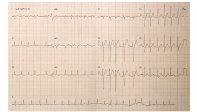
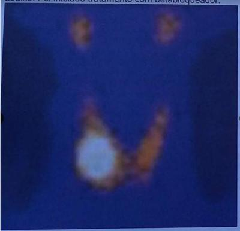
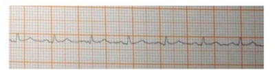
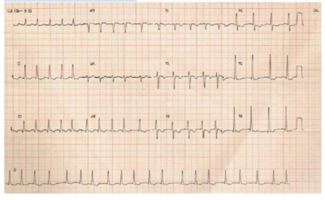
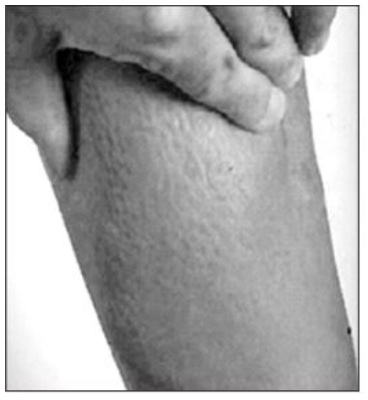
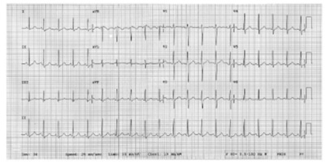

Questão 1 · Crise Tireotóxica · 4000117523Paciente do sexo feminino, 30 anos, é admitida na UPA com história de dor abdominal, diarreia, dispnéia e palpitações. Ao exame, encontrava-se febril (T=38,4ºC), agitada, taquicárdica (FC=135 bpm), com tremores de extremidades e edema em membros inferiores. Relata ser sabidamente portadora de Doença de Graves há 2 anos, mas há 2 semanas cessou abruptamente o uso do Metimazol. O médico da UPA julgou tratar-se de uma crise tireotóxica. De acordo com o raciocínio do médico, deve-se evitar na paciente o uso da seguinte medicação:
A Propranolol.
B Propiltiouracil.
C Hidrocortisona.
D Colestiramina.
E Ácido acetilsalicílico.
Questão 2 · Tireotoxicose gestacional transitória · Alterações na f isiologia tireoidiana durante a gestação · 4000114068Paciente de 21 anos, secundigesta (um parto normal anterior), com idade gestacional de 11 semanas, retorna trazendo os exames complementares solicitados em consulta de pré-natal anterior. Refere náuseas matinais, que melhoram com uso de antieméticos. Nega outras queixas clínicas e obstétricas. Antecedentes pessoais: história pregressa de tireoidite pós-parto com resolução completa após 3 meses. Exame físico: dentro dos padrões de normalidade para o período gestacional. Exames complementares: dentre os exames laboratoriais, observa-se resultado de hormônio estimulador da tireoide com valor de 0,07 µUI/mL e tiroxina livre de 0,9 ng/dL; Qual a conduta mais adequada para o caso clínico apresentado?
A Encerrar investigação e manter seguimento de pré-natal de risco habitual.
B Prescrever metimazol e solicitar dosagem de função tireoidiana após seis semanas.
C Prescrever propiltiouracil e solicitar dosagem de função tireoidiana após seis semanas.
D Solicitar dosagem de hormônio estimulador da tireoide no segundo trimestre de gestação.
Questão 3 · Diagnóstico dif erencial Resistência aos hormônios tireoidianos · 4000112496Menina com 3 anos e 4 meses, é trazida à consulta pela mãe que refere agitação psicomotora e di culdade para dormir e ganhar peso desde os primeiros meses de vida. Nega outras queixas, doenças prévias e uso de medicações. DNPM adequado. Tem antecedentes de pai e avô paterno com bócio. Exame físico: peso = 10,9 kg. Estatura = 90 cm. FC = 140 bpm. Discreto bócio difuso, parenquimatoso, móvel e indolor. Sem outras alterações. Exames laboratoriais: T3 total = 210 ng/dL (VR: 84 a 172); T4 livre = 2,3 ng/dL (VR: 0,9 a 1,8); TSH = 8,2 mIU/L (VR: 0,4 a 4,5); anticorpo anti-TPO = 34 IU/L (VR: menor que 35). Qual é a hipótese diagnóstica mais provável?
A Tireoidite de Hashimoto.
B Hipotireoidismo.
C Resistência aos hormônios tireoidianos.
D Doença de Graves.
Questão 4 · Doença de Graves · 4000112275Mulher de 37 anos de idade é acompanhada por doença de Graves, em uso de metimazol, na dose de 80 mg/dia, há 6 meses. Persiste com insônia, palpitações, tremores de extremidades e mal-estar. Exames realizados há 5 dias: TSH (hormônio estimulante da tireoide): menor que 0,1 µUI/mL (normal: 0,5 a 5) e T4 livre: 3,2 ng/dL (normal: 0,7 a 1,8); alanina aminotransferase (TPG): 560 U/L, aspartato aminotransferase (TGO): 382 U/L; hemograma e função renal: normais. Teste de gravidez: negativo. Considerando os dados descritos, nesse momento, a melhor conduta é
A dobrar a dose do metimazol.
B manter o metimazol e associar o propranolol.
C indicar a tireoidectomia cirúrgica.
D indicar o tratamento com radioiodo.
E trocar o metimazol pelo propiltiouracil.
Questão 5 · Doenças nodulares tóxicas · 4000107853Mulher, 45 anos, refere quadro de perda de peso, palpitação e insônia há 1 mês. Nega antecedentes patológicos. Nega uso de medicamentos. Ao exame físico: bom estado geral, sem alterações oftalmológicas, normotensa, taquicárdica, nódulo palpável em lobo direito da tireoide, sem outras alterações. Assinale a alternativa CORRETA quanto à conduta e à hipótese diagnóstica.
A Dosagens de TSH, T4 livre e cintilografia da tireoide. Doença de Plummer.
B Dosagens de TSH, T4 livre e anti TPO. Doença de Graves.
C Dosagens de TSH, TRAb e ultrassonografia da tireoide. Tireoidite de Hashimoto.
D Dosagens de TSH, T4 livre e antiTPO. Tireoidite de Hashimoto.
E Dosagens de TSH, TRAb e ultrassonografia da tireoide. Doença de Graves.
Questão 6 · Doença de Graves · 4000107813Recém-nascido filho de mãe com doença de Graves não tratada apresentará
A macrocefalia.
B restrição do crescimento intrauterino.
C pós-datismo.
D sonolência.
E bócio eutireoideo.
Questão 7 · Diagnóstico etiológico da tireotoxicose · 4000106182Considere 2 grupos de pacientes com hipertireoidismo: Grupo I: captação de radioiodo normal ou aumentada. Grupo II: captação de radioiodo praticamente ausente. São exemplos desses grupos, respectivamente:
A Adenoma hipofisário produtor de TSH e hipertireoidismo factício.
B Adenoma tóxico e doença trofoblástica.
C Tireoidite pós-parto e tireoidite linfocítica.
D Tireoidite de De Quervain e amiodarona.
E Câncer folicular metastático e doença de Graves.
Questão 8 · Hipotireoidismo na gestação · Tireotoxicose durante a gestação · 4000089456Mulheres jovens frequentemente apresentam doenças da tireoide que precisam ser manejadas na gestação. Sobre as doenças de tireoide e a gestação, é correto afirmar que:
A a terapia de reposição com levotiroxina deve ser mantida durante a gestação, sendo frequente a necessidade de redução da dosagem durante o pré-natal
B a tireoidite pós-parto possui relação com os níveis de anti-TPO e de antitireoglobulina e representa um marcador de risco de progressão para hipotireoidismo
C as pacientes com anti-TPO ou antitireoglobulina devem iniciar reposição hormonal independentemente dos valores de TSH e T4 livre, em função do maior risco de complicações perinatais
D devido ao risco de hepatoxicidade causado pelo propiltiouracil, e de embriopatia, causado pelo metimazol, tais drogas devem ser suspensas durante a 1ª metade da gestação, retornando após a 20ª semana
Questão 9 · Tireoidite granulomatosa subaguda TGSA · 4000080613Homem de 35 anos procurou assistência médica com queixa de ter perdido 4 quilogramas em 1 mês, mesmo o apetite estando preservado. Sente-se agitado, com palpitações, tremores e insônia. Esse quadro vem evoluindo com dor de forte intensidade e de caráter persistente em região cervical anterior. Refere ter recebido o diagnóstico de “arbovirose”, 6 s emanas antes do início do quadro atual. No retorno, trouxe os seguintes exames: TSH 0,01 mIU/mL (VR 0,5 - 4,5 mIU/mL), T4 Livre 5,9 ng/dL (VR 0,7-1,5 ng/dL), TRAb (anticorpo anti-receptor de TSH) negativo. O tratamento desse paciente deverá incluir propranolol e
A metimazol.
B anti-inflamatório.
C levotiroxina.
D radioiodoterapia.
Questão 10 · Doença de Graves · 4000076572Mulher de 30 anos apresenta queixas de emagrecimento com apetite preservado associado à intolerância ao calor, diarreia, irritabilidade e sudorese há algumas semanas. No exame físico, encontra-se agitada, taquicárdica e com tremor de extremidades. Os exames laboratoriais mostram TSH ultrassensível baixo e T4 livre elevado. Pensando em hipertireoidismo em sua causa mais comum, os achados específicos dessa patologia são:
A exoftalmia, paralisia periódica e mixedema pré-tibial
B paralisia periódica, mixedema pré-tibial e acropatia
C acropatia, exoftalmia e paralisia periódica
D mixedema pré-tibial, exoftalmia e acropatia
Questão 11 · Quadro Clínico · 4000042543A tireoide tem um papel importante na regulação de numerosos processos metabólicos de todo o corpo. Nos distúrbios da tireoide é correto afirmar:
A O hipotireoidismo congênito é hereditário e se apresenta na maioria dos casos, com retardo no desenvolvimento mental e físico, que já é visível ao nascimento. As crianças com hipotireoidismo congênito nascem pequenas para a idade gestacional e com os reflexos mais lentos.
B A tireoide de Hashimoto ou tireoidite linfocítica crônica é rara antes da adolescência ea presença de bócio descarta o diagnóstico.
C Na tireoidite linfocítica crônica, a glândula tireoide geralmente está diminuída, comconsistência firme e indolor à palpação.
D O hipertireoidismo resulta da secreção excessiva de hormônio tireoidiano durante a infância e geralmente é causado pela Doença de Graves.
Questão 12 · Tireotoxicose f actícia · 4000039404Paciente jovem apresentando palpitação, procura cardiologista que descarta causas cardíacas. Suspeita de origem endocrinológica e solicita exames de tireoide que revelam: TSH 0.01 mU/L, T3 250 ng/dl, T4 livre 2.5 ng/dl, T4 25ng/dl, tireoglobulina 1.0 ng/ml, cintilogra a com baixa captação. Valores de referência: TSH 0,3 e 4,0 mU/L, T3 80 a 180 ng/dl, T4 livre 0.7-1.8 ng/dl, T4 total 4,5 a 12.6 mg/dl, tireoglobulina 2,0 a 60,0 ng/MI. O provável diagnóstico é
A a doença de Graves
B o bócio nodular tireotóxico
C tireoidite factícia
D tireoidite subaguda
Questão 13 · Tumores ovarianos benignos · Struma ovarii · 4000037721O tumor de ovário com ação hormonal tireoidiana é
A Adenocarcinoma seroso.
B Adenocarcinoma mucinoso.
C Sarcoma.
D Struma Ovari.
E Tumor do seio endodérmico.
Questão 14 · Tireoidite granulomatosa subaguda TGSA · 4000025871Homem de 45 anos relata perda de aproximadamente cinco kg (5% do peso) em um mês, após quadro com febre e odinofagia de remissão espontânea. Nega alterações oculares. Sente dor cervical à palpação e à deglutição, insônia, palpitações e aumento do número de evacuações diárias. Refere estar em uso de suplementos ""termogênicos"" para melhorar sua disposição para atividades físicas, há seis meses. Traz em mãos os seguintes exames: TSH = 0,01 uIU/mL (VR 0,5 - 4,5 uIU/mL), T4 livre = 2,77 ng/dL (VR 0,7- 1,5), tireoglobulina 250 ng/mL (VR: 1,5-50), antitireoperoxidase e TRAb negativos. Nesse caso, o exame que melhor elucidaria o quadro atual e o provável diagnóstico desse paciente são:
A T3 total e tireotoxicose exógena.
B T4 total e bócio multinodular tóxico.
C VHS e tireoidite subaguda.
D Antitireoglobulina e doença de Graves.
Questão 15 · Doença de Graves · 4000020456Uma paciente de 39 anos, branca, secretária executiva em uma multinacional, refere alteração nos olhos após viagem ao exterior, a trabalho. Refere antecedente de tireoidopatia tratada há mais de 3 anos e não sabe referir o medicamento utilizado na época, mas nega uso de radioiodo e cirurgia na região tireoidiana. Além das alterações oculares, refere estar com insônia, irritação e palpitações. Sem outras queixas e sem outros antecedentes patológicos, refere tabagismo, mas nega etilismo e uso de medicações no momento. Ao exame físico: exoftalmo discreto bilateral, lagoftalmo bilateral, tremores de pálpebras e extremidades, bócio difuso, PA = 160x70 mmHg, FC = 120 bpm, mais nada digno de nota. Trouxe exames laboratoriais solicitados pelo médico do trabalho: TSH suprimido com T4 livre elevado, hemograma e funções renal e hepática dentro da normalidade. Assinale a alternativa correta:
A o hipertireoidismo subclínico que a paciente apresenta deve ser tratado com radioiodoterapia seguida pelo uso de tireia, pois já apresentou esse quadro
B o diagnóstico de hipotireoidismo deve ser pensado, pois a paciente já apresentou um quadro anterior e a recorrência justifica o seu tratamento imediato
C no momento, a conduta inicial pode ser feita com o emprego de medicações da classe das tioureias ou tionamidas e solicitação de exames de controle
D o tratamento com levotiroxina deve ser iniciado imediatamente, pois a paciente apresenta sintomatologia e exames laboratoriais alterados
E o quadro clínico e laboratorial sugere o diagnóstico de doença de Basedow-Graves e necessita de tratamento imediato com levotiroxina sódica e propranolol, seguido por cirurgia para o tratamento definitivo
Questão 16 · Crise Tireotóxica · Doença de Graves · 4000011482Homem, 28 anos de idade, chega ao pronto socorro com história de agitação, perda de peso (10 kg), diarreia e palpitações há um mês. Há 2 dias, houve piora dos sintomas, principalmente das palpitações, e passou a apresentar alucinações visuais. Ao exame físico, apresentava-se extremamente agitado, porém consciente. Pele quente e úmida. Temperatura axilar 38,9ºC. Pulso de 140 batimentos por minuto, arrítmico, PA = 160 x 60 mmHg. Tireoide aumentada cerca de 2 vezes seu tamanho normal e proptose ocular bilateral. Eletrocardiograma revelou brilação atrial. Exames laboratoriais mostraram: TSH <0,05 mUI/L (referência: 0,45-4,5) e T4 livre >7,7 ng/dL (referência: 0,6-1,5). Qual a hipótese diagnóstica mais provável e a conduta imediata?
A Crise adrenérgica por feocromocitoma associada à tireotoxicose por Doença de Graves. Tratar com drogas antitireoidianas e internar para betabloqueio e planejamento cirúrgico da neoplasia adrenal.
B Crise de pânico precipitada por hipertireoidismo por Doença de Graves e fibrilação atrial. Tratar com iodeto de potássio, anticoagulação e avaliação psiquiátrica.
C Surto psicótico precipitado por tempestade tireoidiana. Estabilizar o quadro de agitação com antipsicóticos, terapia antiagregante plaquetária com ácido acetilsalicílico e indicar tireoidectomia de urgência.
D Tempestade tireoidiana complicada com fibrilação atrial. Internar preferencialmente em unidade de cuidados intensivos; iniciar antitireoidianos, betabloqueadores, corticoide e, se disponível, iodeto de potássio 1-2 horas após a primeira dose de antitireoidianos.
E Tireoidite aguda levando a tireotoxicose e sepse. Tratar com antibioticoterapia de amplo espectro e, caso identificado abscesso cervical, indicar drenagem cirúrgica.
Questão 17 · Doença de Graves · Endocrinologia · 4000006259Em relação ao tratamento da Doença de Graves, assinale a alternativa INCORRETA:
A Nos casos de Doença de Graves associada a nódulos suspeitos, a tireoidectomia deve ser indicada como tratamento.
B A agranulocitose é um raro efeito colateral e está relacionada tanto ao propiltiouracil quanto ao metimazol.
C As tionamidas utilizadas no tratamento da Doença de Graves podem apresentar reações alérgicas de forma cruzada.
D No tratamento da Doença de Graves, a indicação para o emprego terapêutico do Iodo 131 deve sempre ser precedido do preparo prévio do paciente com betabloqueador e tionamidas.
Questão 18 · Doença de Graves · Endocrinologia · 4000003628Paciente 30 anos, apresentando perda de peso (6 kg, em 40 dias), palpitações, exoftalmia, bócio, pele úmida, tremores de extremidades. Sobre essa patologia, assinale a alternativa CORRETA.
A A solicitação do anticorpo TRAB, para fazer o diagnóstico, é essencial.
B O uso de beta-bloqueador e drogas anti-tireoidianas, como tapazol e propiltiuracil, é necessário para o manejo clínico inicial dessa doença.
C A paciente tem indicação de tireoidectomia de emergência.
D A paciente tem indicação de realização de radioiodo, especialmente, se for tabagista e com altos níveis de anticorpos TRAB.
E Presença de prurido com uso de tapazol, contraindica o uso de drogas anti- tireoidianas, sendo necessária dose ablativa com radioiodo.
Questão 19 · Tireoidites subagudas · Doença de Graves · Hipotireoidismo · 4000125565Quais os achados ultrassonográ cos sugestivos, respectivamente, de doença de Graves, Hashimoto e tireoidite subaguda? Assinale a melhor alternativa.
A Bócio difuso com hipervascularização ao doppler / padrão heterogêneo de imagem com imagem em queijo suíço / bócio com áreas hipoecóicas mal delimitadas com redução de vascularização.
B Padrão heterogêneo de imagem com imagem em queijo suíço / bócio com áreas hipoecóicas mal delimitadas com redução da vascularização / bócio difuso com hipervascularização ao doppler.
C Bócio difuso com hipervascularização ao doppler / bócio com áreas hipoecóicas mal delimitadas com redução da vascularização / padrão heterogêneo de imagem com imagem em queijo suíço.
D Áreas hipoecóicas mal delimitadas com redução da vascularização / bócio difuso com hipervascularização ao doppler / padrão heterogêneo de imagem com imagem em queijo suíço.
E Bócio difuso com hipervascularização ao doppler / padrão heterogêneo de imagem com imagem em queijo suíço / bócio com áreas hiperecóicas mal delimitadas com aumento da vascularização.
Revisar: possível letra faltando em enunciado
Questão 20 · Tireoidites agudas · 4000125564Na investigação de dor cervical em topogra a de tireóide, dor maior à direita e com irradiação para ouvido direito, em mulher jovem, usg demonstra área bem hipoecóica de volumosa extensão maior em lobo direito. T3 e T4 elevados. VHS elevado. Anticorpo anti- tpo não reagente. Qual a conduta geralmente desnecessária para esse caso?
A Uso de propranolol.
B Uso de anti-inflamatorio.
C Uso de corticóide
D Uso de analgésicos.
E Uso de propiotiouracil.
Questão 21 · Doença de Graves · 4000122802Médico do Programa de Saúde da Família atende paciente gestante com diagnóstico de Doença de Graves. Qual a verdadeira?
A TSH, T4 livre e T3 total elevados com hipercaptação difusa à cintilografia ratificam o diagnóstico.
B O diagnóstico definitivo é feito pela punção tireoidiana guiada por ultrassom.
C O único tratamento totalmente contraindicado na gestação é a Radioterapia.
D Presença de anticorpo TRab positivo é patognomônico de Doença de Graves.
E Espera-se encontrar nesse paciente como manifestação clínica um aumento da pressão diastólica.
Questão 22 · Crise Tireotóxica · 4000121435Uma paciente de sessenta anos de idade, portadora de doença de Graves, em uso irregular de metimazol, evoluiu no pós- operatório imediato de endarterectomia com dispneia súbita, associada à taquicardia (FC de 128 bpm e pulso irregular), à febre (38 graus), à PA de 100 x 80 mmHg e à agitação psicomotora. O eletrocardiograma mostrou brilação atrial de alta resposta ventricular (prévio em ritmo sinusal) e o ecocardiograma transtorácico, o dímero D e a troponina estavam normais. Com base nesse caso hipotético, assinale a alternativa que apresenta o diagnóstico mais provável.
A Tempestade tireoidiana.
B Tromboembolismo pulmonar.
C Dissecção de carótida.
D Síndrome coronariana aguda.
E Feocromocitoma.
Questão 23 · Diagnóstico · Quadro clínico · Doenças trof oblásticas · 4000118657Paciente SN, 26 anos, chega ao PA obstétrico devido a sangramento vaginal de moderada quantidade associado a náuseas e vômitos, nega outras queixas. Não apresenta comorbidades, nega vícios. G1 P 0, atraso menstrual calculado pela DUM de 6 semanas. Ao exame físico: PA: 108 x 51 mmHg; FC: 80 bpm; corada, hidratada. Abdome: útero palpado 2 cm abaixo da cicatriz umbilical; exame especular: sangramento de moderada quantidade exteriorizando-se pelo orifício cervical externo. Realizou exames complementares: Ultrassonogra a pélvica ginecológica com útero em AVF de 1421 cm3, homogêneo, cavidade uterina com conteúdo heterogêneo por múltiplas áreas císticas, embrião não visualizado. Fundo de saco livre e ovários não visualizados. Exames laboratoriais: Hb 12,1; Hematócrito 36,6; leucócitos 8.950; plaquetas 185.000; Tipo sanguíneo A+; Creatinina 0,5; TGO:20; TGP: 19; TSH: 0,01; Beta-hCG: 655.921,8 mUI/mL. Radiogra a de tórax: sem alterações. O médico que atendeu a paciente diagnosticou-a como doença trofoblástica gestacional. A paciente foi submetida a Aspiração Manual Intra Uterina e o laudo da anatomia patológica foi constatado mola completa. Sobre o caso clínico apresentado, assinale CERTO para verdadeiro e ERRADO para falso para a afirmação a seguir: O hipertireoidismo é decorrente da estimulação cruzada dos receptores do hormônio estimulante da tireoide pela cadeia alfa do hCG, que é idêntica à encontrada em outros hormônios glicoproteicos.
A Certo.
B Errado.
Questão 24 · Doença de Graves · Tireotoxicose durante a gestação · 4000115011Com relação à questão anterior, assinale a alternativa CORRETA.
A O tratamento com iodo radioativo pode ser instituído no segundo trimestre, caso otratamento medicamentoso não apresente bons resultados.
B Durante toda a gestação, a paciente necessita de acompanhamento hormonal bem como ultrassonográfico.
C A paciente não apresenta mais quadro clínico, portanto não necessita mais de acompanhamento laboratorial.
D A doença de Graves pode evoluir com remissão para eutireoidismo, sem necessidade de tratamento definitivo, mesmo durante a gestação.
E Uma vez remitido para eutireoidismo, não há necessidade de acompanhamentos futuros.
Questão 25 · Doença de Graves · Tireotoxicose durante a gestação · 4000114996Paciente do sexo feminino, raça branca, 30 anos, foi encaminhada ao ambulatório da endocrinologia para acompanhamento da doença de Graves. Encontrava-se na 18ª semana de gestação. Nega queixas e outros antecedentes patológicos. Medicações em uso: metimazol (tapazol) 30 mg/dia. Nega etilismo e tabagismo. Exame físico: frequência cardíaca de 92 bpm, pressão arterial 120x80 mmHg, tireoide difusamente aumentada, sem nodulações aparentes. Exames laboratoriais: TSH: 0,35 (VR 0,35 - 4,5), T4l 1,6 (VR: 0,7 - 1,8), TRAB negativo, anti-TPO positivo (450). Qual a conduta CORRETA?
A Manter metimazol e reavaliar com quadro clínico e laboratorial.
B O propiltiouracil é considerado o medicamento de escolha durante toda a gestação e a amamentação.
C Suspender metimazol e iniciar propiltiouracil, mantendo-o até o final da gestação.
D Indicar tireoidectomia parcial para controle hormonal, pois paciente se encontra nosegundo trimestre de gestação.
E Suspender metimazol, pois durante a gestação não se dever usar tioureia.
Questão 26 · Manif estações clínicas de tireotoxicose · Taquicardia sinusal · 4000112613Assinale a arritmia mais frequente no hipertireoidismo.
A Taquicardia por reentrada nodal atrioventricular.
B Taquicardia por reentrada atrioventricular.
C Fibrilação atrial.
D Flutter atrial.
E Taquicardia sinusal.
Questão 27 · Manif estações clínicas de tireotoxicose · Tireotoxicose f actícia · 4000102827Diagnóstico etiológico da tireotoxicose Mulher, 20 anos, procurou assistência médica referindo palpitação taquicárdica, sudorese e perda de peso há 30 dias. Refere transpirar bastante e tem sentido muito calor. Ao exame físico, notam-se tremor no de extremidades e FC = 112 bpm (regular). Exames laboratoriais: TSH < 0,02 mUI/L; T4 livre = 2,3 ng/dL (referência – 0,6 a 1,3 ng/dL); cintilogra a da tireoide com iodo: ausência de captação; anti-TRAB = negativo. O diagnóstico mais provável é de
A tireoidite subaguda de De Quervain.
B tireoidite de Hashimoto.
C doença de Graves.
D tireotoxicose factícia.
Questão 28 · Manif estações clínicas de tireotoxicose · 4000098608Paciente sexo feminino, 30 anos, procura auxílio médico por sudorese excessiva, fadiga, palpitações, perda de peso não intencional, e insônia há 4 meses. Refere muita ansiedade e labilidade emocional, associada a sensação de falta de ar. Relata oligomenorréia há dois meses. Ao exame apresenta pele úmida e quente, unhas de Plummer, PA 160 x 98mmHg, rítmo cardíaco irregular, fraqueza próxima de membros inferiores + 4 / + 5. O diagnóstico mais provável é:
A Linfoma de Hodgkin.
B Tuberculose.
C Distúrbio bipolar, em fase maníaca.
D Hipertireoidismo.
E Transtorno de ansiedade generalizada.
Questão 29 · Crise Tireotóxica · 4000097306Homem, 71a, relata emagrecimento de 8 kg nos últimos 2 meses, associado a fraqueza para subir escadas e pentear o cabelo. Há 2 semanas com aumento da frequência das evacuações, cefaleia e palpitações. Antecedentes pessoais: diabetes mellitus em uso de insulina e metformina, além de tabagismo 80 maços/ano. Exame físico: PA = 162 x 104 mmHg; FC = 108bpm; FR = 21 irpm; T= 37,3°C; oximetria de pulso (ar ambiente) = 96%; neurológico: hiperre exia global e fraqueza muscular proximal em membros superiores e inferiores grau IV. Eletrocardiograma: A CONDUTA É:

A Eletroneuromiografia e hemoglobina glicada.
B TSH, T4 livre, metoprolol e rivaroxabana.
C Coprocultura e ciprofloxacino.
D Tomografia de crânio e coletar liquor.
Questão 30 · Tireoidite granulomatosa subaguda TGSA · 4000069977Há duas semanas, mulher de 40 anos apresenta febre, cefaleia, mialgia, coriza clara, evoluindo com dor em região cervical anterior, irradiando para o ouvido direito, e febre de 38,5°C. Os exames laboratoriais mostram: hemoglobina = 12g/dL, leucócitos = 10.500/mm³, plaquetas = 250.000/mm³, T4 livre = 2,1ng/mL (normal = 0,7 a 1,8ng/mL), TSH = 0,01m/U/mL (normal = - 0,4 a 4,5mU/mL), VHS = 80mm na primeira hora; exame de captação de iodo radioativo = 2,5% (normal = 25% a 35%). Nesse caso, o diagnóstico mais provável e o tratamento adequado, repectivamente, são:
A doença de Graves / uso de propilitiouracil seguido de iodo radioativo
B tireoidite granulomatosa / uso de corticoide e betabloqueador
C tireoidite aguda / uso de antibiótico e drenagem cirúrgica
D doença de Hashimoto / uso de corticoide e de tamoxifeno
Questão 31 · Doença de Graves · Manif estações clínicas de tireotoxicose · 4000068771Tireotoxicose por destruição de f olículos tireoidianos Uma mulher de 50 anos vem apresentando quadro de palpitações, tremores nos de extremidade, emagrecimento sem perda de apetite e intolerância ao calor. Ao exame físcio sua tireoide está aumentada (2,5 X) e o seu reflexo aquileu exaltado. Não há exoftalmia e seu membros inferiores estão sem alterações. Exames laboratoriais: THS = 0,01 microU/L (normal: 0,4-5) e T4 livre = 3,8 microg/dl(normal:0,8-1,9). Assinale a alternativa que contém o conjunto de exames com maior capacidade de diferenciar a tireotoxicose por Doença de Graves da Tireoidite subaguda
A Ultrassonografia da Tireoide e anticorpos antitireoglobulina.
B Cintilogafia da Tireoide com captação de iodo radioativo e anticorpos antitireoglobulina .
C Ultrassonografia da Tiireoide e anticorpos antirreceptor do T SH (TRab).
D Cintilografia de Tireoide com captação do iodo radioativo e anticorpos antirreceptor do TSH ( TRab).
Questão 32 · Tireotoxicose f actícia · 4000060630Mulher, 28 anos de idade, com queixas de palpitações, tremores de extremidades e perda de peso. Ao exame físico, apresentava pele úmida, FC = 110 bpm e PA = 140 x 60 mmHg, tiroide normal à palpação. Os exames laboratoriais demonstraram: TSH = 0,01 mU/L, T4 Livre = 2,5 mcg/dl (VN = Valor Normal) = 0,7 a 1,7 mcg/dl ), T3 = 35 ng/dl (VN = Valor Normal) = 70 - 190 ng/dl) e cintilogra a tiroidiana com baixa captação de I¹³¹. Com base nesse caso, assinale a alternativa que apresenta, corretamente, a hipótese diagnóstica mais provável.
A Doença de Graves.
B Doença de Plummer.
C Tireotoxicose factícia.
D Tiroidite subaguda.
E Bócio multinodular tóxico.
Questão 33 · Tumores ovarianos benignos · Struma ovarii · 4000037309O tumor de ovário com ação hormonal tireoidiana é o
A Adenocarcinoma seroso.
B Adenocarcinoma mucionoso.
C Sarcoma.
D Struma Ovari.
E Tumor do seio endodérmico.
Questão 34 · Doenças nodulares tóxicas · 4000033490Mulher de 56 anos, doceira, começou com quadro de irritabilidade insônia e tremores nas maõs. Foi atendida no pronto- atendimento devido a palpitações, sendo diagnosticada, ao eletrocardiograma, com brilação atrial. Revisão laboratorial revelou TSH indetectável e T4 livre com nível sérico muito elevado. A cintilogra a pode ser vista abaixo. Foi iniciado tratamento com betabloqueador. Entre as opções a seguir, indique qual deverá ser a CONDUTA DEFINITIVA para essa paciente.

A Lobectomia direita.
B Radioablação por iodo.
C Tireoidectomia total.
D Tratamento clínico com drogas antitireoidianas (metimazol, propiltiouracil).
Questão 35 · Doença de Graves · 4000025302A doença de Graves, a forma mais comum de hipertireoidismo, quando acomete mulheres grávidas apresenta características e cuidados específicos. Assinale a alternativa incorreta:
A a crise tireotóxica, decorrente do hipertireoidismo na gravidez, exige cuidados intensivos devido à extrema gravidade
B o propranolol pode ser usado, porém em baixas doses e por um curto e período de tempo, para evitar efeitos prolongados sobre o feto, como bradicardia ou retardo de crescimento intrauterino
C o propiltiouracil não deve ser indicado para o tratamento no 1° trimestre, devido ao risco de embriopatia acentuada
D a administração de iodo-131, como forma definitiva de tratamento do hipertireoidismo, é contraindicada durante a gravidez
Questão 36 · Tireotoxicose f actícia · 4000025019Mulher de 28 anos queixa irritação, tremores, nervosismo e perda ponderal de 7kg em 2 meses, após ter iniciado tratamento para emagrecimento. O exame físico revela taquicardia e hipertensão arterial. Os exames complementares apresentaram TSH indetectável, VHS normal, tireoide homogênea a ultrassonogra a, e captação baixa de iodo marcado à cintilografia. O diagnóstico para esse quadro é:
A tireoidopatia factícia.
B doença de Basedow-Graves.
C doença de Plummer.
D tireoidite de De Quervain.
Questão 37 · Manif estações clínicas de tireotoxicose · Tireotoxicose por destruição de f olículos tireoidianos · 4000017833Diagnóstico etiológico da tireotoxicose Paciente sem doenças prévias, 19 anos, sexo feminino. Sinais e sintomas: tremores nas extremidades, nervosismo e palpitações tarquicárdicas (FC = 150 bpm, PA 135 mmHg x 65 mmHg, pulsos radiais palpáveis e arrítimicos). A avaliação cardiovascular evidenciou ictus cordis in situ, ritmo cardíaco irregular em 2 tempos, taquicárdico, bulhas normofonéticas, sem sopros ou ruídos adventícios. Na palpação, percebeu-se glândula tireoide indolor, levemente aumentada e não nodular. Resultado de dosagem séricas: • TSH (tirotrofina) = 0,05 mU/L (valores de referência = 0,4 - 4,2 mU/L); • T4 livre (tiroxina livre) = 4,0 nanogramas/dL (valores de referência = 0,8 - 2,7 nanograma/dL); • Anticorpos antirreceptor de TSH (ou Trab) = 2 U/L (valor de referência < 10 U/L); • Anticorpos antitireoglobulinas = positivo 1/6.400 (valores de referência não reagente < 1/100); • Anticorpos antiperoxidase tireoidiana (anti-TPO) = 70 U/mL (valores de referência < 35 U/mL).; • Ecodopplercardiograma = normal. Tira de ritmo eletrocardiográfico (ECG) mostrada na figura a seguir (derivação D2, velocidade do papel: 25 mm/s, calibração: 1 cm= 1 mV). A respeito das informações do caso clínico descrito anteriormente, julgue o item subsequente: "A principal base fisiopatogenética da doença apresentada pela paciente do caso clínico em questão é a infecção viral".

A Certo.
B Errado.
Questão 38 · Tireotoxicose · Manif estações clínicas de tireotoxicose · Diagnóstico etiológico da tireotoxicose · 4000003141Em relação ao hipertireoidismo, assinale a resposta INCORRETA.
A A investigação do hipertireoidismo em idosos que apresentem fibrilação atrial (FA) sempre se faz necessário ao diagnostico diferencial, pelo fato de que bócios nodulares tóxicos ocorrerem com relativa frequência nessa faixa etária da população.
B A tireoidectomia total na Doença de Graves é reservada aos casos que se associam a nódulos da tireoide ou na presença de exoftalmia acentuada.
C Na grávida com hipertireoidismo, a decisão pela droga de escolha sempre recai pelo Metimazol, independente do período gestacional, pois é a droga mais segura para a condição, pelo fato de não transpor a barreira transplacentária.
D Na exoftalmia decorrente da Doença de Graves, são encontrados infiltrados de glicosaminoglicans ou mucopolissacarídeos na musculatura extrínseca do olho devido a ativação de fibrolastos, e consequente espessamento dessa musculatura.
Questão 39 · Tireoidite granulomatosa subaguda TGSA · 4000000666Homem, 43 anos, hígido, apresentou resfriado comum com coriza, espirros, congestão nasal e tosse há 2 semanas. Hoje amanheceu com queixa de dor em região cervical anterior, acentuada pela deglutição, além de febre, mialgia, insônia, tremor de extremidades e sudorese. Aos exames complementares, apresenta VHS aumentado e TSH reduzido com T4 livre normal. O diagnóstico mais provável seria:
A Amigdalite;
B Tireoidite de Quervain;
C Dengue;
D Faringite.
Questão 40 · Manif estações clínicas de tireotoxicose · 4000127529Uma mulher de 32 anos apresenta tremores de membros superiores, taquicardia, agitação e irritação. Frequência cardíaca:120 batimentos por minuto, pressão arterial: 140 × 90 mmHg. Glândula tireoide globalmente aumentada. Exame diagnóstico mais indicado, considerando a hipótese diagnóstica mais provável:
A Eletrocardiograma.
B Tomografia do pescoço.
C Ecocardiograma.
D Dosagem de colesterol total e frações.
E Dosagem de hormônio tireostimulante - TSH.
Questão 41 · Manif estações clínicas de tireotoxicose · 4000120570Mulher, 27 anos, refere labilidade emocional, choro fácil, di culdade para dormir e palpitações taquicárdicas. Na avaliação clínica apresenta-se inquieta, com pele quente e úmida e tremor no de extremidades. Sua frequência cardíaca é de 116 bpm e nota-se reflexos tendinosos exacerbados. Assinale a alternativa que contém o achado de exame complementar mais provável.
A T4 total baixo.
B T3 indetectável.
C TSH baixo.
D T4 livre baixo.
E Captação de iodo baixa pela tireoide.
Questão 42 · Etiologia · Hipertireoidismo secundário · Hipopituitarismo · 4000120372Considere dois pacientes. O primeiro tem TSH de 6,8 mUI/L (VR = 0,5 – 5,0 mUI/L) e T4L de 2,4 (VR = 0,90 – 1,80 ng/ml); o segundo apresenta TSH de 2,50 mUI/L e T4L de 0,35 ng/dl. Estes pacientes apresentam respectivamente:
A Hipertireoidismo primário e hipotiroidismo central.
B Hipertireoidismo primário e hipotiroidismo primário.
C Hipertireoidismo central e hipotireoidismo primário.
D Hipertireoidismo central e hipotireoidismo central.
E Hipertireoidismo central e hipotiroidismo de causa indefinida.
Questão 43 · Doença de Graves · 4000109549Mulher, 18 anos, há três meses apresenta insônia, irritabilidade, fraqueza, palpitação e dor torácica, não relacionada aos esforços e sem sintomas respiratórios. Recebeu diagnóstico em outro serviço de transtorno da ansiedade, estando em uso de clonazepam, sem sucesso. Ao exame encontra-se tensa, PA: 140 x 70 mmHg; P=FC: 102 batimentos em um minuto; Sat O2: 98%; sopro sistólico discreto em foco mitral, sem irradiação; ausculta pulmonar normal, palpação abdominal normal; discreto tremor em mãos e discreto edema pré-tibial em membros inferiores. Esse relato é compatível com:
A transtorno da ansiedade somente.
B valvulopatia mitral.
C insuficiência cardíaca por valvulopatia.
D síndrome carcinoide.
E hipertireoidismo.
Questão 44 · Doença de Graves · 4000108839Mulher, 24 anos, procura atendimento médico com queixa de nervosismo, agitação, queda de cabelos e emagrecimento. Ao exame físico, a paciente está taquicárdica, com 132 bpm, apresenta tumoração em região anterior do pescoço que, à palpação, sugere um aumento difuso da glândula tireoide e tem exoftalmia moderada. Em relação ao caso clínico descrito, assinale a alternativa correta.
A O diagnóstico mais provável é de doença de Graves e a dosagem dos anticorpos antirreceptores de TSH auxiliam no diagnóstico, estando presentes em cerca de 95% desses pacientes.
B O quadro é sugestivo de bócio nodular atóxico e o tratamento deve ser feito com levotiroxina.
C Trata-se de um adenoma tóxico de tireoide. Recomenda-se a punção aspirativa com agulha fina (PAAF) e radioiodoterapia.
D A doença de Hashimoto é o diagnóstico principal e a suplementação com levotiroxina deve ser prontamente instituída.
E O carcinoma papilífero de tireoide é a principal hipótese diagnóstica e a tireoidectomia está indicada no caso descrito.
Questão 45 · Tireoidite granulomatosa subaguda TGSA · 4000105054Homem, 40 anos, relata perda de aproximadamente 3 kg (4% do peso) em um mês. Sente-se agitado, com dor cervical, di culdade para dormir, taquicardia e palpitações. Os sintomas foram precedidos de resfriado. Volta em retorno com TSH = 0,1 uIU/ml (VR 0,54,5 uIU/ml); T4 livre de 7,77 ng/dl (VR 0,7-1,5); tireoglobulina = 367 ng/ml (VR: 1,5-50) e TRAb = negativo. A conduta CORRETA inclui propranolol e:
A Anti-inflamatório.
B Levotiroxina.
C Metimazol.
D Tireoidectomia.
E Radioiodoterapia.
Questão 46 · Tireoidite granulomatosa subaguda TGSA · 4000104903Mulher de 34 anos procura a clínica de família queixando-se de dor em região cervical anterior, irritabilidade, intolerância ao calor e palpitação há três dias. Também refere quadro de amidalite viral há três semanas. Ao exame clínico, foram observados: vermelhidão em área cervical, bócio difuso e doloroso, temperatura de 37,8°C e FC = 104 bpm. Baseando nesses dados, a hipótese diagnóstica mais provável e os exames que podem confirmá-la, respectivamente, são:
A Tireoidite de De Quervain / hemograma completo e VHS.
B Doença de Graves / T4 livre e anticorpos antiperoxidase.
C Tireoidite de Hashimoto / TSH e captação com iodo radioativo.
D Tireotoxicose factícia / ultrassonografia e biópsia por agulha fina.
Questão 47 · Tireotoxicose f actícia · 4000104273Em casos suspeitos de tireotoxicose factícia (ingestão de hormônios tireoidianos), níveis séricos
A baixos ou indetectáveis de tireoglobulina sérica podem ser úteis no diagnóstico.
B elevados ou indetectáveis de tireoglobulina sérica podem ser úteis no diagnóstico.
C baixos ou indetectáveis de tireoglobulina urinária podem ser úteis no diagnóstico.
D baixos ou indetectáveis de tireoglobulina sérica são inúteis no diagnóstico.
Questão 48 · Crise Tireotóxica · 4000103503Paciente de 26 anos procura emergência por nervosismo e taquicardia. Ao exame físico, apresentou exoftalmia, mãos úmidas e trêmulas, FC = 1 bpm, TAX 37,2ºC. O exame neurológico identi cou desorientação, agitação e hiperre exia. Após ser internado, foi medicado com propiltiouracil e, para aproveitar o efeito conhecido como Wolf-Chaikoff, foi administrado:
A lítio
B metimazol
C propranolol
D iodeto de potássio
Questão 49 · Tireotoxicose induzida pela amiodarona · Fibrilação atrial · Bloqueadores dos canais de potássio · 4000098999Mulher, 52a, diabética, em uso de metformina 1.700 mg/dl, é diagnosticada com brilação atrial em janeiro de 2016. Ecocardiograma e dosagens de TSH e T4 livre realizados em fevereiro de 2016 não mostram alterações. Em março de 2016, faz cardioversão e inicia uso contínuo de amiodarona. Em abril de 2017 refere perda de peso de 4 Kg e taquicardia há 2 meses. Nesta época, faz novos exames, que mostram TSH = < 0,01 alternativa CORRETA é:

A Hipertireoidismo não detectado no exame de abril de 2016.
B Há indicação de cardioversão.
C Betabloqueador está contraindicado.
D Hipertireoidismo induzido por amiodarona em 2017.
Questão 50 · Tireoidite granulomatosa subaguda TGSA · 4000066497Paciente 28 anos chega no consultório queixando-se de dor em região anterior do pescoço iniciada há cerca de 15 dias após episódio gripal. No exame físico você observa aumento da tireoide de forma assimétrica e bastante dolorida à palpação. Seus exames laboratoriais evidenciaram hormônios tireoidianos elevados e TSH baixo. A captação de iodo radioativo também foi baixa. Qual o diagnóstico mais provável para esse paciente?
A Tireoidite de Riedel.
B Bócio multinodular atóxico.
C Tireoidite de De Quervain.
D Tireoidite de Hashimoto.
E Adenoma hipofisario.
Questão 51 · Doenças nodulares tóxicas · 4000066434As indicações terapêuticas para a doença de Plummer são:
A Iodo radioativo e nodulectomia.
B Iodo radioativo e lobectomia.
C Drogas antitireoidianas e nodulectomia.
D Drogas antitireoidianas e lobectomia.
Questão 52 · Tireoidite granulomatosa subaguda TGSA · 4000064235Paciente de 40 anos, sexo feminino, procura assistência médica devido à dor e aumento de volume da tireoide, febre e mal- estar geral de início há 2 semanas. O diagnóstico de tireoidite subaguda (Quervain) foi realizado. Quais resultados de exames laboratoriais abaixo são característicos desse diagnóstico nessa fase da doença?
A VHS normal; cintilografia de tireoide com captação elevada.
B Hemograma com leucopenia; T4 livre normal.
C Anticorpo antiperoxidase positivo; T4 livre reduzido.
D TSH suprimido; cintilografia de tireoide com captação elevada.
E VHS elevada; cintilografia de tireoide com captação reduzida.
Questão 53 · Diagnóstico etiológico da tireotoxicose · 4000061701A causa mais frequente de tireotoxicose é:
A adenoma tóxico
B doença de Graves
C tireoidite subaguda
D bócio multinodular tóxico
Questão 54 · Conceitos · Hipertireoidismo subclínico · Hipertireoidismo clínico · 4000039456Em paciente jovem assintomático com TSH indetectável e T4 livre normal, o próximo passo para definição da conduta é solicitar:
A anticorpos antitireoperoxidase (anti-TPO).
B anticorpos antirreceptor de TSH (TRAb).
C ultrassonografia de tireoide.
D tri-iodotironina (T3).
Questão 55 · Tireoidite pós parto · 4000034880M.T.N., 36 anos, sexo feminino, casada, procura atendimento referindo episódios recorrentes de palpitação, tremor de extremidades, insônia e perda ponderal. Nega uso de medicamentos. Refere ter tido um parto normal há 4 meses. Nega outras comorbidades. Ao exame: tireoide discretamente aumentada de tamanho à palpação, sem nódulos, ausência de exoftalmia, discreto tremor de extremidades. Exames laboratoriais: TSH: 0,01 Ul/ml (valor de referência: 0,3 a 4,2 mUl/ml), T4 livre: 1,9 ng/dl (valores de referência: 0,7 a 1,8 ng/dl), anticorpo antirreceptor de TSH (TRAB): 0,3 Ul/L (valor de referência: < 1,75 Ul/L). Captação do iodo radioativo mostra uma glândula com baixa captação de iodo. Diante do caso, marque a alternativa correta:
A O tratamento deve ser feito com propilitiouracil.
B A paciente tem um quadro clínico típico de doença de Graves.
C Nesses casos, geralmente o anticorpo antitireoperoxidase (anti-TPO) é positivo.
D O tratamento deve ser feito com iodo radioativo.
Questão 56 · Tireotoxicose induzida pela amiodarona · 4000029497Paciente cardiopata, 60 anos de idade, em uso de amiodarona há 6 meses, realizou testes de função tireoidiana que mostraram: TSH = 0,01 mUI/L (VR = 0,3-4,0) e T4 livre de 2,5 ng/ml (VR = 0,7-1,8). Queixa-se de emagrecimento, cansaço e insônia. Cintilogra a tireoidiana mostrou captação de iodo radioativo nas 24h (RAIU/24h) elevada (48%, VR = 15-40). Qual o POSSÍVEL mecanismo de ação pelo qual a amiodarona interfere na função tireoidiana?
A Grande homologia com hormônios tireoidianos.
B Imunossupressão.
C Homologia com o TSH.
D Interferência direta na função hipofisária.
E Estímulo direto à produção de T3 e T4.
Questão 57 · Crise Tireotóxica · 4000027958Paciente portador de doença de Graves apresenta tremores, sudorese e taquicardia. O diagnóstico é de crise tireotóxica. Em relação as drogas usadas no tratamento dessa afecção, assinale a alternativa INCORRETA.
A O Propiltiouracil (PTU) bloqueia a organificação do iodo, reduzindo a produção hormonal.
B O Propiltiouracil (PTU) bloqueia a conversão periférica de T4 para T3.
C O controle da hipertermia deve ser feito, preferencialmente, com aspirina, que tem efeito de aumentar a ligação dos hormônios tireoidianos às suas proteínas carreadoras.
D O iodo pode inibir a liberação hormonal tireoidiana, devendo ser iniciado depois de 2 horas da introdução das medicações antitireoidianas.
Questão 58 · Tireotoxicose induzida pela amiodarona · Etiologia · 4000023757A respeito dos efeitos da amiodarona sobre a tireoide, sabe-se que:
A a ação da amiodarona sobre a tireoide se dá tanto pelo excesso de iodo quanto pela inflamação (tireoidite).
B a maioria dos pacientes desenvolve hipotireoidismo ao longo do tratamento.
C mesmo em doses mais baixas de amiodarona, a incidência de distúrbios da tireoide é alta.
D o hipertireoidismo é a manifestação clínica mais comum e normalmente requer suspensão da medicação.
Questão 59 · Tireoidite granulomatosa subaguda TGSA · 4000021447Paciente de 27 anos procura assistência médica por causa de palpitações, sudorese e tremores de extremidades há 72 horas. Apresenta retração palpebral, sem proptose. A tireoide é aumentada de volume difusamente e dolorosa à palpação, sem eritema. FC = 116 bpm. PA = 160x70 mmHg. Exames laboratoriais: TSH = 0,03 (VR 0,4-4,0 mUI/L); T4 total = 18 (VR 6 a 12 mcg/dL); T4 livre = 3,9 (VR 0,7 a 1,8 ng/dL); T3 = 280 (VR 70 a 180 ng/dL). TRAb = 1,0 (VR < 1,75 UI/mL). Nesse caso, o paciente deve
A iniciar antibioticoterapia de imediato e realizar US cervical para drenar os prováveis abscessos tireoidianos.
B apresentar VSH, tireoglobulina e proteína C reativa elevados e espera-se uma captação de iodo radioativo em 24 horas inferior a 5%.
C inicar droga antitireoidiana imediatamente, por se tratar de doença de Graves.
D estar em uso de hormônio tireoidiano exógeno, o que pode ser confirmado com a dosagem da tireoglobulina elevada.
Questão 60 · Tireotoxicose · Manif estações clínicas de tireotoxicose · Hipotireoidismo · 4000019925Hipertireoidismo é menos prevalente que o hipotireoidismo, mas ambos são importantes problemas de saúde no cotidiano do médico de família e comunidade. Analise as seguintes sintomas e sinais: Sudorese aumentada, rouquidão, parestesia, constipação intestinal, ganho de peso, pele quente, edema periorbital, pele in ltrada, letargia e ginecomastia. Indique (HO) HIPOTIREOIDISMO e (HE) HIPERTIREOIDISMO: ( ) Ganho de peso e pele infiltrada; ( ) Sudorese aumentada e pele quente; ( ) Parestesia e letargia; ( ) Rouquidão e constipação intestinal; ( ) Edema periorbital e ginecomastia; Marque a sequência CORRETA:
A HO – HE – HO – HO – HE;
B HE – HE – HE – HO – HO;
C HE – HO – HO – HE – HO;
D HE – HE – HE – HO – HE;
E HO – HO – HO – HE – HO;
Questão 61 · Doença de Graves · 4000014313Mulher de 29 anos procurou assistência médica referindo há 3 meses perda de peso (3 kg), irritabilidade, calor excessivo e palpitações. A paciente refere ainda amenorreia há 2 meses, náuseas e vômitos. Ao exame, apresentava proptose ocular bilateral, bócio difuso e indolor, tremor no de extremidades e taquicardia. Exames laboratoriais: TSH < 0,02 mUI/L (VR = 0,3-4,0 mUI/L); T4 livre = 2,17 ng/dl (VR = 0,7-1,5 ng/dl); TRAb = 5,4 U/L (positivo > 1,75 U/L); hCG = positivo. Legenda: TSH – hormônio tireoestimulante; T4 – tiroxina; TRAb – anticorpo antirreceptor de TSH; hCG – gonadotro na coriônica humana; VR – Valor de Referência. Qual a conduta terapêutica mais indicada?
A Hidratar.
B Iniciar metimazol.
C Iniciar propiltiouracila.
D Realizar tireoidectomia total.
Questão 62 · Crise Tireotóxica · 4000004892A Crise Tiroidiana é uma emergência médica que ocorre em pacientes com tireotoxicose. Aponte a alternativa INCORRETA sobre esta síndrome:
A A mortalidade da crise tiroidiana é alta, variando de 20% para 50% se a crise não for reconhecida e tratada.
B Ocorre aumento dos níveis de TSH e aumento dos hormônios T3 e T4 circulantes.
C Clinicamente é caracterizada por hiperpirexia, taquicardia desproporcional a febre, desidratação, choque e manifestações cardiovasculares, disfunção do sistema nervoso central.
D O tratamento envolve inibição da síntese, diminuição da conversão periférica de T4 em T3 e bloqueio da ação dor hormônios tiroideanos, além da remoção extracorpórea destes hormônios.
Questão 63 · Características Ultrassonográf icas dos Nódulos · Apresentação Clínica e Avaliação Inicial · 4000002207Hipertireoidismo primário Feminino, 50 anos, chega a consulta muito ansiosa devido “massa no pescoço”. Histórico familiar de irmão com câncer de tireoide. À palpação, nota-se nodulação em região cervical esquerda, de mais ou menos 2,0 cm, discretamente endurecida, móvel, indolor. Traz dosagem TSH = 0,11 (VR = 0,5-4,5 mUI/L) e T4 livre = 1,7 ng/dl (VR = 0,7-1,5 ng/dl). Qual o próximo passo na avaliação desta paciente?
A Solicitação de cintilografia de tireoide.
B Dosagem de tireoglobulina e calcitonina.
C Solicitação de Punção Aspirativa por Agulha Fina (PAAF) do nódulo.
D Solicitação de ultrassonografia de tireoide.
Questão 64 · Doença de Graves · 4000126290Paciente do sexo feminino, 35 anos, com história de nervosismo e fraqueza nos últimos 3 meses. Ao exame, apresenta bócio difuso, cujo crescimento foi observado há 6 meses. Apresenta PA elevada, taquicardia e exoftalmia bilateral. O provável achado de ultrassom de tireoide e cintilografia seria:
A Bócio nodular / tireoide aumentada hipercaptante.
B Bócio difuso hipervascular / aumento difuso de captação.
C Bócio difuso hipervascular / reduzida captação na cintilografia.
D Bócio nodular hipervascular / tireoide aumentada hipocaptante.
E Bócio difuso hipovascular / tireoide aumentada hipercaptante.
Questão 65 · Doença de Graves · Interpretação dos exames laboratoriais · 4000125686Paciente do sexo feminino, 30 anos, tem diagnóstico de Doença de Graves há 6 meses. Em uso de metimazol 20 mg ao dia, iniciado no momento do diagnóstico. Queixa- se de astenia e ganho de peso (3 kg desde a última consulta há 3 meses). Ao exame, apresenta FC: 70 bpm; PA: 110 x 70 mmHg;l bócio difuso de volume menor comparado à época do diagnóstico. Exames laboratoriais: TSH: 0,24 mU/L (Valor de Referência: 0,4 - 5,5 mU/L) e T4L: 0,6 (Valor de Referência: 0,7 - 1,8 ng/dL). Sobre o caso acima, é CORRETO afirmar:
A Como o TSH está diminuído, deve-se aumentar a dose de metimazol para controle adequado do hipertireoidismo.
B A não normalização do TSH indica resposta insuficiente à droga antitiroidiana, sendo indicada dose terapêutica de iodo.
C A presença de T4L diminuído indica necessidade de redução da dose de metimazol.
D Neste momento, há indicação de se solicitar cintilografia de tireoide para se definir a melhor conduta terapêutica.
E A dosagem de anticorpos é importante para avaliar a resposta ao tratamento nesse momento.
Questão 66 · Doenças nodulares tóxicas · 4000119363Mulher de 58 anos de idade, queixando-se de irritabilidade e insônia, apresenta-se com aumento da tireoide à direita, onde se palpa um nódulo de cerca de 2 cm, indolor. Exame físico: FC 92 bpm; discreta retração palpebral, sem exoftalmia. Exames laboratoriais: TSH 0,03 µUI/L (valores normais 0,4 - 4,0) T4 L: 1,98 ng/dL (valores normais 0,8 - 1,9); TRAB e anti TPO negativos. A ultrassonografia mostrou nódulo sólido de 1,6 cm no LD. A hipótese diagnóstica mais provável é
A doença de Graves.
B doença de Plummer.
C carcinoma folicular hiperfuncionante.
D tireotoxicose factícia por T3.
Questão 67 · Diagnóstico etiológico da tireotoxicose · 4000117761Mulher de 32 anos de idade com queixas de palpitações frequentes, cansaço e falta de ânimo há seis meses, apresenta IMC = 23 kg/m2, PA e frequência cardíaca normais. A tireoide tem volume normal com provável nódulo palpável em lobo direito. Os níveis de T4 livre estão aumentados e o TSH suprimido. A captação tireoideana do I-131 em 24h está difusamente reduzida em todo parênquima tiroidiano. O diagnóstico diferencial para o caso não inclui:
A Tireoidite linfocítica subaguda.
B Doença de Plummer.
C Ingestão de levotiroxina.
D Tireoidite granulomatosa de De Quervain.
E Struma ovarii.
Questão 68 · Doença de Graves · 4000116910Sra. J.S.L.C., 34 anos, casada, mãe de 2 lhas, vai em consulta ao ambulatório médico porque seu marido percebeu que ela estava com o pescoço um pouco “inchado”. Ela disse que sua lha mais nova tinha 1 anos e 6 meses e a rmou, inclusive, que perdeu peso nos últimos 2 meses, estando quase no peso que tinha na época de seu casamento. Relatou também episódios de taquicardia e um pouco mais de cansaço ao ir para a academia. PA: 140 x 60 mmHg; FC: 92 bpm; SO2 : 96%; FR: 12 bpm. Ao exame, apresentava tireoide palpável e indolor, sem linfonodomegalias. Demais exames físicos estavam normais. Durante a avaliação e o seguimento da paciente, foi identi cado bócio difuso tóxico. Com base na história clínica, assinale a alternativa que apresenta o diagnóstico mais provável.
A Doença de Graves.
B Tireoidite pós-parto.
C Tireoidite subaguda (de Quervain).
D Adenoma tóxico.
E Tireotoxicose iatrogênica.
Revisar: possível letra faltando em enunciado
Questão 69 · Tireoidite pós parto · 4000116892Sra. J.S.L.C., 34 anos, casada, mãe de 2 lhas, vai à consulta ao ambulatório médico porque seu marido percebeu que ela estava com o pescoço um pouco “inchado”. Ela disse que sua lha mais nova tinha 1 anos e 6 meses e a rmou, inclusive, que perdeu peso nos últimos 2 meses, estando quase no peso que tinha na época de seu casamento. Relatou também episódios de taquicardia e um pouco mais de cansaço ao ir para a academia. PA = 140 x 60 mmHg; FC = 92 bpm; SO2 = 96%; FR = 12 irpm. Ao exame, apresentava tireoide palpável e indolor, sem linfonodomegalias. Demais exames físicos estavam normais. No caso apresentado, dentre os exames complementares a seguir, são melhores para investigação diagnóstica dessa paciente:
A TSH, T4l, T3, hemograma, VHS, PCR, TGO, TGP e antiperoxidase.
B TSH, T4l, T3, ultrassom de tireoide, antiperoxidase, antitireoglobulina e TRAb.
C TSH, T4l, cintilografia da tireoide, antiperoxidase e TRAb.
D TSH, T4l, T3, ultrassom de tireoide e PAAF (Punção Aspirativa com Agulha).
E TSH, T4l, cintilografia da tireoide, antitireoglobulina e TRAb.
Questão 70 · Diagnóstico etiológico da tireotoxicose · 4000114335Foram analisados alguns casos de tireotoxicose e divididos em dois grupos: Grupo I: captação de radioiodo normal ou elevada. Grupo II: captação de radioiodo rebaixada. São possíveis etiologias:
A Grupo I. resistência aos hormônios Grupo II. bócio multinodular
B Grupo I. metástase extensa de carcinoma folicular de tireoide Grupo II. struma ovarii
C Grupo I. tireoidite induzida por amiodarona Grupo II. doença de graves
D Grupo I. tireoidite subaguda GrupoII. adenoma tóxico
E Grupo I. adenoma hipofisário produtor de TSH GrupoII. hipertiroidismo factício
Questão 71 · Doença de Graves · Etiologia · 4000099247Paciente do sexo feminino, 30 anos, portadora de doença de Basedow-Graves foi submetida a iodoterapia. Após o tratamento pode apresentar:
A Leucemia.
B Carcinoma papilífero da tireoide.
C Hipotireoidismo.
D Carcinoma folicular da tireoide.
Questão 72 · Manif estações clínicas de tireotoxicose · 4000082869Nos casos de tireotoxicose, quais são os grupos de sintomas e sinais que aparecem em pelo menos 80% dos casos?
A Nervosismo, hiperidrose e taquicardia.
B Palpitações, tremores e fibrilação atrial.
C Perda de peso, aumento do apetite e diarreia.
D Fadiga, hipersensibilidade ao calor e esplenomegalia.
E Hipersensibilidade ao frio, fadiga e bradicardia.
Questão 73 · Doença de Graves · 4000081175Paciente de 29 anos de idade, vem fazendo acompanhamento em decorrência de doença de Graves, e tem seus sintomas controlados com metimazol 20mg/dia. Entretanto, após período de atraso menstrual, teve confirmada gravidez. Neste caso, a melhor conduta para o tratamento da paciente em questão está descrita na letra:
A Manter metimazol, apenas reduzindo a dose para 10mg/dia.
B Trocar metimazol por I131.
C Trocar metimazol por propiltiouracil, na dose efetiva mais baixa.
D Manter metimazol e associar propranolol.
E Manter metimazol e associar propranolol.
Questão 74 · Doença de Graves · 4000078876Sobre a Doença de Graves, assinale a alternativa correta:
A É uma forma comum de hipertireoidismo que surge em indivíduos que apresentam nódulos tireoidianos hipercaptantes de longa duração.
B Tem maior incidência entre 20 e 40 anos, sendo mais comum em homens do que em mulheres (proporção de 1 para 2).
C Nas formas tóxicas não tratadas, o quadro laboratorial mostra T SH suprimido, T4 livre elevado e captação de iodo muito baixa.
D Pode ser acompanhada de manifestações extratireoidianas, sendo a oftalmopatiainfiltrativa bastante frequente.
Questão 75 · Conceitos · 4000076385Na avalição laboratorial de pacientes com suspeita de hipertiroidismo, pode-se afirmar:
A Em casos de TSH baixo, mas com T4 livre normal, a tireotoxicose está excluída.
B Em pacientes com TSH normal e T4 livre normal, deve-se dosar o T3 livre para investigar tireotoxicose.
C Nos casos de TSH baixo e T4 livre alto, o adenoma de hipófise deve ser investigado, mesmo quando há bócio.
D Nos casos de T4 livre normal e TSH baixo, o T3 livre deve ser medido para avaliar a possibilidade de toxicose induzida por T3.
E O hipertiroidismosubclínico é suspeitado quando há exames que demonstram T SH normal com T4 livre discretamente elevado.
Questão 76 · Doença de Graves · 4000058866Paciente feminina, de 55 anos de idade, com doença de Graves, possui indicação de tireoidectomia total por intratabilidade clínica. Fez uso de propanolol e propiltiuracil, e foi iniciado lugol para realizar a cirurgia, após dez dias. O iodeto de lugol atua inibindo a:
A produção de antitireoperoxidase
B liberação do hôrmonio tireoideano
C produção da proteína carreadora de tiroxina
D conversão periférica do hormônio tireoideano
Questão 77 · Alterações na f isiologia tireoidiana durante a gestação · 4000058690A gestação afeta vários aspectos da siologia da tiroide que devem ser avaliadas com cuidado para que não haja introgenia. Assinale a alternativa correta quanto às alterações laboratoriais observadas:
A Decréscimo do TSH no primeiro trimestre
B Redução do T4 livre no primeiro trimestre
C Aumento da positividade de auto-anticorpos
D Redução da excreção urinária de Iodo
E Redução do T3 total e Aumento do T4 livre
Questão 78 · Diagnóstico etiológico da tireotoxicose · 4000056237No diagnóstico diferencial das causas de hipertireoidismo, o padrão laboratorial com TSH suprimido, T3 elevado, T4 elevado, T4 livre elevado, Captação de 24h de iodo 131 muito baixa e Tireoglobulina elevada é compatível com:
A Tireoidite subaguda.
B Doença de Graves.
C Tireotoxicose factícia.
D Struma ovarii.
E Tireotropinoma.
Questão 79 · Tireoidite granulomatosa subaguda TGSA · 4000051912As tireoidites são um grupo de distúrbios que apresentam em comum a presença de in amação da glândula tireoide. Uma das formas de tireoidite é a subaguda, de etiologia provavelmente infecciosa e de evolução geralmente benigna e autolimitada. Sobre a tireoidite subaguda, considere as afirmativas a seguir. I. O risco de desenvolver a doença é significativamente maior em pessoas com HLA B35 ou Bw35; II. Quando o paciente desenvolve sintomas tireotóxicos, deve ser tratado com metimazol em altas doses; III. Comumente, há sintomas de infecção de vias aéreas algumas semanas depois do episódio de tireoidite; IV. Cerca de 5 a 10% dos pacientes evoluem com hipotireoidismo permanente após o episódio de tireoidite. Assinale a alternativa correta.
A Somente as afirmativas I e II são corretas.
B Somente as afirmativas I e IV são corretas.
C Somente as afirmativas III e IV são corretas.
D Somente as afirmativas I, II e III são corretas.
E Somente as afirmativas II, III e IV são corretas.
Questão 80 · Doença de Graves · 4000043760Um paciente de 18 anos queixa-se de nervosismo, perda de peso, palpitações e intolerância ao calor há seis meses. Ao exame físico, está taquicárdico (120 bpm), afebril e emagrecido, observando-se palmas das mãos úmidas e quentes, além de tremor de extremidades. A tireoide está aumentada, com consistência macia e frêmito palpável, embora não exista exoftalmia. Qual a conduta mais adequada nesse momento?
A Propranolol.
B Propranolol + metimazol.
C Iodo radioativo.
D Iodo radioativo + metimazol.
E Iodo radioativo + iodeto de potássio.
Questão 81 · Tireoidite granulomatosa subaguda TGSA · 4000032402Paciente do sexo feminino, 40 anos, com quadro de dor de garganta de início há 1 semana. Refere episódio de rinorreia e tosse seca há 15 dias. Ao exame físico, apresentava oroscopia normal, ausência de linfonodomegalia cervical, e palpação dolorosa da tireoide. Exames laboratoriais com discreta leucocitose e VHS = 88mm. Qual o provável diagnóstico?
A Doença de Graves.
B Faringite aguda estreptocócica.
C Tireoidite subaguda (Quervain).
D Faringite aguda viral.
E Tireoidite de Hashimoto.
Questão 82 · Tireoidite granulomatosa subaguda TGSA · 4000022923Para o tratamento da tireotoxicose por tireoidite granulomatosa subaguda, é mais indicada a seguinte opção terapêutica:
A Metimazol.
B Propiltiouracila.
C Propranolol.
D Ablação com iodo radioativo.
Questão 83 · Tireotoxicose durante a gestação · 4000018827Com relação às patologias endócrinas no contexto da ginecologia e da obstetrícia, julgue o item subsecutivo. Pacientes grávidas com exacerbação do hipertireoidismo e consequente insu ciência cardíaca podem usar betabloqueadores, desde que por curto prazo.
A Certo.
B Errado.
Questão 84 · Doença de Graves · 4000015046Mulher de 32 anos apresenta quadro de perda ponderal, taquicardia, palpitações, agitação psicomotora, tremores e hiperfagia há cerca de 2 meses. Ao exame físico apresenta-se com FC=135 bpm, PA = 140 x 60 mmHg, tremor no de extremidades, tireóide aumentada difusamente de volume com temperatura local elevada e sopro tireoidiano, proptose bilateral sem sinais flogísticos oculares. Assinale a alternativa correspondente ao manejo deste caso neste momento.
A Devem ser prescritos metimazol, benzodiazepínico, inibidor da enzima conversora de angiotensinas.
B Devem ser prescritos propiltiuracil, propranolol, prednisona.
C A paciente deve ser encaminhada para tratamento com iodo radioativo.
D A paciente deve ser encaminhada para tratamento cirúrgico.
E Deve ser prescritos solução de lugol e sais de lítio.
Questão 85 · Doença de Graves · 4000006369Paciente tem doença de Graves e chega ao pronto-socorro com quadro de febre, sudorese excessiva, taquicardia sinusal (160 bpm) e agitação psicomotora. O diagnóstico mais provável e a prioridade inicial do tratamento, neste momento, são, respectivamente:
A Feocromocitoma; introdução de antipirético.
B Crise tireotóxica; introdução de betabloqueador e propiltiouracila.
C Sepse; introdução de antibiótico de amplo espectro.
D Síndrome de abstinência alcoólica; introdução de benzodiazepínico.
E Síndrome neuroléptica aguda; introdução de dantroleno.
Questão 86 · Doença de Graves · 4000005316Paciente, MRF, feminino, 34 anos, com histórico de ter realizado tratamento para hipertiroidismo por doença de Graves, há 5 meses com iodo radioativo (15mCi). Vem à consulta para reavaliação, sem queixas. Exames laboratoriais, nesta consulta : T3 e T4 livre, em níveis normais e TSH suprimido ( TSH = 0,05 mci/mL) -VR = (0,45 - 4,5 ). Sem usar drogas antitireoidianas (metimazol ou propiltiouracil). Ao exame físico: ritmo cardíaco regular, FC = 88 bpm. É CORRETO afirmar que:
A A paciente está curada do hipertiroidismo.
B Há indicação em iniciar propiltiouracil ou metimazol.
C Há indicação de nova dose ablativa com iodo radioativo, sobretudo pelo risco de arritmias.
D Todos os tratamentos propostos supracitados poderiam ser usados.
E Acompanhar a paciente com avaliações periódicas da função tireoidiana seria a conduta mais razoável.
Questão 87 · Doença de Graves · 4000004069A principal causa de hipertireoidismo é a doença de Graves, uma patologia que acomete a tireoide, em que há produção de anticorpos, que atacam a glândula simulando o hormônio TSH, um estimulador do funcionamento da tireóide. Esta é a causa de 3 em cada 4 casos de hipertireoidismo. No que diz respeito ao tratamento do hipertireoidismo, qual a informação CORRETA?
A Medicamentos antitireoidianos são drogas, que diminuem a quantidade de hormônio produzido pela tireoide, sendo a droga preferida a levotiroxina sódica.
B O tratamento com iodo radioativo cura o problema da tireoide, sem o risco de ter que tomar comprimidos de hormônio tireoidianos para o resto de sua vida a fim de manter níveis normais de hormônio.
C A remoção cirúrgica da tireoide (tireoidectomia) é uma solução permanente, mas não normalmente a preferida.
D Os betabloqueadores são drogas de escolha, pois além de diminuírem os sintomas, como por exemplo, os tremores, tratam a patologia.
E Todas as terapias possuem grandes riscos, devendo o hipertireoidismo ser tratado somente em casos muito sintomáticos.
Questão 88 · Tireotoxicose · Doença de Graves · Diagnóstico etiológico da tireotoxicose · 4000003499Para confirmar a principal causa de hipertireoidismo primário com captação aumentada e difusa na tireóide de Iodo radioativo na cintilografia, devemos solicitar:
A TSH.
B Anti TPO.
C Anti microssomal.
D TRAB.
Questão 89 · Manif estações clínicas de tireotoxicose · Conceitos · 4000126910Uma mulher com 35 anos de idade é admitida na Unidade de Emergência em razão de uma situação de estresse. Desde o divórcio, há 2 anos, mora com os pais, os quais referem que a paciente tem estado inquieta há alguns meses, apresentando irritabilidade contínua e "crises nervosas" com muitos tremores e irritação, situações que vêm se agravando. A paciente admite sua irritabilidade, mas, por sua vez, refere que os pais a tratam "como criança" e que a insistência em levá-la ao médico é um dos motivos de sua irritação. Ao exame, a paciente apresenta agitação mental sem perda da autocrítica, tremores nos nos membros superiores, reflexos patelares e bicipitais exarcebados, com aumento de área reflexógena bilateralmente. A palpação da tireoide não revela bócio ou nodulação. Nesse caso, deve ser solicitada
A Avaliação psiquiátrica para descartar psicose reativa breve.
B Dosagem de T4 livre e de TSH, para descartar hipertireoidismo.
C Avaliação psicológica, para descartar transtorno de ansiedade com crises de pânico.
D Dosagem de catecolaminas plasmáticas, metanefrinas e ácido vanil-mandélico urinários, para descartar feocromocitoma.
Questão 90 · Manif estações clínicas de tireotoxicose · 4000126368Mulher, 61 anos, chega ao Serviço de emergência queixando-se de palpitações ocasionais, principalmente à noite, arrítmicas, de curta duração. Associado a isso referia estar muito ansiosa, perda de 3 kg em 3 meses, disfagia e episódios de diarreia. Negava febre e dor torácica. Tabagista de 1 maço ⁄dia há mais de 30 anos e etilismo social. No exame físico apresentava-se consciente, orientada, agitada, com FC de 160 bpm, PA 190 /100 mmHg, T: 36°C. Sinal de LID LAG +. Ritmo cardíaco irregular com ausculta pulmonar sem alteração. Qual é a etiologia mais provável desta taquicardia?
A Tireotoxicose.
B Miocardite viral.
C Tuberculose.
D Tromboembolismo pulmonar.
E Transtorno de ansiedade.
Questão 91 · Tireotoxicose induzida pela amiodarona · 4000125774Homem, 59 anos, branco, procura ambulatório com queixas de palpitações, tremores, polifagia e emagrecimento. O quadro teve início há 30 dias. Refere tratamento para arritmia cardíaca com amiodarona 200 mg/dia há seis meses. Nega outras comorbidades e/ou intercorrências. Ao exame: PA = 120 x 80 mmHg; FC = 68 bpm; peso = 63,2 kg; altura = 1,76 m; IMC = 20,4 kg/m²; tireoide: normal; tremores de extremidades. Restante do exame físico dentro da normalidade. Exames laboratoriais: TSH = 0,01 (0,35-4); T4L = 4,12 (0,7-1,8); TRAb: negativo; anti-TPO: negativo; antitireoglobulina: negativo. US de tireoide: volume normal (11,6 g); heterogênea; hipovascular e sem nódulos. Cintilogra a de tireoide: captação diminuída difusamente. Qual a hipótese diagnóstica?
A Hipertireoidismo autoimune.
B Tireoidite de Hashimoto.
C Hipertireoidismo induzido por amiodarona tipo 1.
D Doença de Basedow-Graves.
E Hipertireoidismo induzido por amiodarona tipo 2.
Questão 92 · Tireotoxicose induzida pela amiodarona · 4000125173Homem, 59 anos, branco, procura ambulatório com queixas de palpitações, tremores, polifagia e emagrecimento. O quadro teve início há 30 dias. Refere tratamento para arritmia cardíaca com amiodarona 200 mg/dia há seis meses. Nega outras comorbidades e/ou intercorrências. Ao exame: PA: 120x80 mmHg; FC: 68 bpm; Peso: 63,2 kg; Altura:1,76 m; IMC: 20,4 kg/m2; tireoide: normal; tremores de extremidades. Restante do exame físico dentro da normalidade. Exames laboratoriais: TSH: 0,01 (0,35-4), T4l: 4,12 (0,7-1,8), TRAB: negativo, AntiTPO: negativo, Anti-tireoglobulina: negativo. US de tireoide: volume normal (11,6 g), heterogênea, hipovascular e sem nódulos. Cintilogra a de tireoide: captação diminuída difusamente. O seguimento do paciente deve ser baseado em
A Cintilografia da tireoide.
B Ultrassonografia da tireoide.
C TSH e T4 livre.
D AntiTPO e TRAB.
E Hemograma, TGO e TGP.
Questão 93 · Tireotoxicose induzida pela amiodarona · 4000125168Homem, 59 anos, branco, procura ambulatório com queixas de palpitações, tremores, polifagia e emagrecimento. O quadro teve início há 30 dias. Refere tratamento para arritmia cardíaca com amiodarona 200 mg/dia há seis meses. Nega outras comorbidades e/ou intercorrências. Ao exame: PA: 120x80 mmHg; FC: 68 bpm; Peso: 63,2 kg; Altura:1,76 m; IMC: 20,4 kg/m2; tireoide: normal; tremores de extremidades. Restante do exame físico dentro da normalidade. Exames laboratoriais: TSH: 0,01 (0,35-4), T4l: 4,12 (0,7-1,8), TRAB: negativo, AntiTPO: negativo, Anti-tireoglobulina: negativo. US de tireoide: volume normal (11,6 g), heterogênea, hipovascular e sem nódulos. Cintilogra a de tireoide: captação diminuída difusamente. O tratamento de escolha é
A Metimazol.
B Prednisona.
C Levotiroxina sódica.
D Propranolol.
E Propiltiouracil.
Questão 94 · Crise Tireotóxica · 4000102834Paciente de 35 anos, quanti cada há 2 meses. Há 1 dia evoluiu com agitação psicomotora e desorientação no tempo espaço, associado a dor abdominal náuseas e vômitos. Segundo familiares, paciente não apresentava comorbidades, tendo iniciado uso de amiodarona, há 4 dias, após consulta com cardiologista por suposto diagnóstico de arritmia. Exame físico: REG, desidratada, taquipneica (FR=26ipm), taquicárdica (FC=110bpm), PA=150x60mmHg, Tax=39oC; Região cervical: bócio difuso, sem nodulações palpáveis; Precórdio com ritmo duplo regular sem sopros; Pulmões sem ruídos adventícios; Abdome indolor e sem visceromegalias. Exames complementares: Hemograma com Hb = 12g/dl leucócitos = 11.000/mm³ (90% segmentados) plaquetas = 400.000/mm³ ; glicose = 100mg/dl; sódio = 140mEq/l; potássio = 3,3mEq/l; creatinina = 1,4mg/dl; TGP = 60U/l; TSH<0,001mU/l; T4 livre = 2,2ng/dl; ECG = taquicardia sinusal; Rx tórax normal. Com relação ao caso clínico acima, assinale a alternativa correta em relação à conduta a ser tomada:
A Suspensão da amiodarona, hidratação vigorosa, propranolol, propiltiouracil via oral ou retal e solução saturada de iodeto oral ou retal 2 horas após a prescrição do propiltiouracil
B O metimazol deve ser preferido com relação ao propiltiouracil por ser mais eficaz no bloqueio da síntese do hormônio tireoidiano, sendo associado à hidratação vigorosa, atenolol e suspensão da amiodarona
C A prescrição de antibioticoterapia de amplo espectro deve ser precoce, em associação às medidas específicas para tireotoxicose, uma vez que o paciente apresenta critérios clínicos de sepse grave
D O uso de corticosteroides, associado às medidas específicas para tireotoxicose, pode ser útil por impedir a liberação do hormônio tireoidiano pré-sintetizado
Questão 95 · Manif estações clínicas de tireotoxicose · Fatores clínicos predisponentes · 4000096955Mulher, 81a, em acompanhamento por insu ciência cardíaca, em uso regular de captopril e hidroclorotiazida, queixa-se de batedeira, ansiedade e dispneia súbita mesmo ao repouso, nega dor precordial. Exame físico: PA = 140 x 85 mmHg; FC = 124 bpm; T = 36,5°C; FR = 24 irpm; oximetria de pulso (ar ambiente) = 97%; pulmões: estertores crepitantes em base esquerda; coração: bulhas arrítmicas, normofonéticas, presença de sopro protossistólico, suave em foco mitral, sem irradiação. Membros: edema maleolar +/4+. Traz o ECG abaixo: (VER IMAGEM) O DIAGNÓSTICO É:

A Hipercalemia.
B Síndrome coronariana aguda com supra.
C Endocardite bacteriana subaguda.
D Hipertireoidismo.
Questão 96 · Crise Tireotóxica · 4000095339A escala de Burch e Wartofsky é utilizada em qual emergência endocrinológica?
A Coma mixedematoso.
B Crise tireotóxica.
C Insuficiência adrenal.
D Cetoacidose diabética.
Questão 97 · Doenças nodulares tóxicas · 4000069426As indicações terapêuticas para doença de Plummer são:
A Iodo radioativo e nodulectomia.
B Iodo radioativo e lobectomia.
C Drogas antitireoidianas e nodulectomia.
D Drogas antitireoidianas e lobectomia.
Questão 98 · Doença de Graves · 4000069340Mulher, 33 anos, refere palpitações, sudorese excessiva e perda de peso, mesmo estando com aumento de apetite. Ao exame: pele quente e sudorética, tremor no de extremidades, FC: 112 bpm, PA: 140/70 mmHg, retração palpebral e proptose. Investigação Laboratorial: T3 e T4 elevados, TSH suprimido e anticorpo antirreceptor do TSH positivo. Em relação ao exame físico da tireoide nesta paciente, são apresentados os seguintes achados: I. Bócio multinodular e indolor à palpação. II. Bócio difuso com sopro à ausculta da glândula. III. Bócio uninodular e endurecido à palpação. Qual é a alternativa CORRETA?
A Apenas I.
B Apenas II.
C Apenas III.
D Apenas II e III.
Questão 99 · Doença de Graves · 4000067367Mulher de 27 anos tem doença de Graves mal controlada e múltiplos nódulos tireoidianos em lobo direito (o maior em polo inferior de 3,5 cm, cujo PAAF revelou ser um carcinoma papilífero). A paciente refere que já possui um nódulo em lobo inferior direito há cinco anos e nesse intervalo ele aumentou pouco de tamanho. O melhor tratamento para essa paciente é a realização de:
A Iodo radioativo.
B Tireoidectomia total.
C Lobectomia direito com istmectomia.
D Tireoidectomia subtotal com esvaziamento radical modificado no lado direito.
Questão 100 · Crise Tireotóxica · 4000060870Pacientes com crise tireotóxica podem apresentar todos os sintomas abaixo citados, EXCETO:
A Hipotermia.
B Psicose.
C Fibrilação atrial.
D Icterícia.
E Insuficiência cardíaca congestiva.
Questão 101 · Tireotoxicose por destruição de f olículos tireoidianos · Diagnóstico etiológico da tireotoxicose · 4000057997Paciente de 30 anos, com queixa de irritabilidade e insônia, perda de peso de 3 kg em 2 semanas. Na palpação de tireoide, apresenta bócio discreto com área nodular em Lobo Direito de cerca de 1 cm, móvel e indolor. Exames laboratoriais com TSH suprimido, T4 livre 2.4 mg/d (VR: 0,8 a 1,8), cintilogra a com hipocaptação difusa do radioido. Assinale a alternativa que indica a hipótese diagnóstica mais provável:
A Doença de Graves.
B Doença de Plummer.
C Tireotoxicose factícia.
D Síndrome de Resistência ao Hormônio Tiroidiano (Sd. Refetoff).
E Tireoidite subaguda linfocítica.
Questão 102 · Tireoidite granulomatosa subaguda TGSA · 4000053676Paciente do sexo feminino, 40 anos, procura assistência médica devido a dor de garganta de início há 1 semana. Refere episódio de infecção das vias aéreas superiores há 20 dias. Exame físico com oroscopia normal, ausência de linfonodomegalia cervical e palpação da tireoide dolorosa. Exame laboratorial com discreta leucocitose e VHS (eritrossedimentação) de 88 mm. Qual o provável diagnóstico desse paciente?
A Doença de Graves.
B Faringite aguda estreptocócica.
C Faringite aguda viral.
D Tireoidite subaguda (De Quervain).
E Tireoidite de Hashimoto.
Questão 103 · Diagnóstico dif erencial Resistência aos hormônios tireoidianos · 4000053070Em relação à Síndrome de Resistência ao Hormônio Tireoidiano (SRHT), pode-se afirmar que:
A Apresenta herança autossômica recessiva.
B Sempre requer tratamento para obter-se o estado de eumetabolismo.
C Resulta de uma mutação no gene do receptor do hormônio tireoidiano, na maioria dos pacientes.
D Não acomete o coração porque os hormônios tireoidianos atuam por meio dos receptores alfa, não envolvidos na doença.
E Existe um aumento desproporcional do T3 em relação ao T4.
Questão 104 · Tireoidite granulomatosa subaguda TGSA · 4000052861Paciente do sexo feminino, 27 anos, previamente hígida, iniciou com quadro de febre (38ºC), odinofagia, coriza e mal-estar geral. Cerca de três semanas depois, após melhora parcial do quadro, passou a apresentar taquicardia, tremores em mãos, irritabilidade e dor em região cervical anterior, de intensidade moderada a alta e que alivia pouco com o uso de analgésicos e anti-inflamatórios. Ao exame físico, além dos tremores de extremidades, observou-se taquicardia (FC = 102 bpm); hiperre exia patelar; pele quente e úmida; bócio de tamanho moderado; difuso e muito doloroso à palpação. Os exames laboratoriais revelaram um hemograma com leucocitose sem desvio à esquerda; VHS = 50 mm; TSH = 0,01 mU/L (VR = 0,5 a 5,0 mU/L); T4 livre = 2,98 ng/dl (VR = 0,7 a 1,7 ng/dl). Em relação ao caso, assinale a alternativa CORRETA:
A A cintilografia de tireoide é um exame útil para o diagnóstico diferencial e, neste caso específico, deve se apresentar com hipocaptação difusa do traçador.
B A cintilografia de tireoide é um exame desnecessário para o diagnóstico diferencial e, neste caso específico, deve se apresentar com hipercaptação difusa do traçador.
C A cintilografia de tireoide é um exame desnecessário para o diagnóstico diferencial e, neste caso específico, deve se apresentar com hipercaptação difusa do traçador.
D O uso de uma droga antitireoidiana, como o metimazol ou o propiltiouracila, associada a um betabloqueador, é o tratamento inicial recomendado para o caso.
E O uso de corticosteroides, como a prednisona, não é recomendado para o tratamento da dor resistente ao uso de analgésicos e anti-inflamatórios não hormonais.
Questão 105 · Tireoidite de Riedel · Tireoidites subagudas · Etiologia · 4000051804Sobre as tireoidites, é CORRETO afirmar:
A Na tireoidite de De Quervain, o VHS está aumentado.
B Na tireoidite de Hashimoto, o TSH tende a estar suprimido.
C Na tireoidite de Riedel, a captação de iodo radioativo é aumentada.
D O mecanismo da tireotoxicose nas tireoidites subagudas é a produção aumentada de tiroxina pela glândula inflamada.
Questão 106 · Hiperparatireoidismo primário · Hipercortisolismo · Hipercalcemia associada à malignidade · 4000048630No que se refere às doenças oncológicas, julgue o item a seguir. As crises paraneoplásicas são raras e, quando ocorrem, acompanham geralmente os tumores de pulmão, de mama, de ovário e retroperitoneal. Entre elas, as mais conhecidas são as hormonais, como a síndrome de Cushing, a hipoglicemia, a ginecomastia, o hiperparatireoidismo e o hipertireoidismo.
A Certo.
B Errado.
Questão 107 · Hipertireoidismo primário · 4000048496Com relação às doenças da tireoide, julgue o item subsequente: O iodo radioativo é um tratamento seguro, rápido, de baixo custo, de efeito definitivo e de fácil administração, indicado para pacientes portadores de doença de Graves. Todavia, em se tratando de mulheres em idade fértil, é importante excluir a possibilidade de gravidez e assegurar o uso de método contraceptivo e caz em um período de seis a doze meses após o tratamento.
A Certo.
B Errado.
Questão 108 · Doença de Graves · 4000045777Mulher de 24 anos com diagnóstico de doença de Graves, em uso de metimazol há cerca de 2 meses, vem à consulta com diagnóstico de gravidez de 8 semanas. Assinale a alternativa INCORRETA:
A Não há indicação de substituir o metimazol por propiltiouracila até completar 12 semanas de gestação.
B Tireoidectomia pode ser necessária no segundo trimestre em mulheres com agranulocitose secundária ao uso de drogas antitireoidianas.
C Baixos níveis de TSH podem ser considerados fisiológicos no primeiro trimestre da gestação.
D O mau controle do hipertireoidismo está relacionado com complicações obstétricas como abortamento, morte fetal e prematuridade.
E Deve ser realizada a dosagem de TRAb a partir de 20 semanas de gestação devido ao seu alto valor prognóstico de tireotoxicose fetal.
Questão 109 · Hipertireoidismo primário · 4000045613A terapia com radioiodoterapia tem maior aplicabilidade quando aplicada em pacientes portadores de:
A tireoidite subaguda e doença de Graves.
B tireoidite subaguda e bócio multinodular tóxico.
C bócio multinodular tóxico e doença de Graves.
D adenoma tóxico de tireoide e Hashimoto.
E bócio multinodular tóxico e Hashimoto.
Questão 110 · Doença de Graves · 4000027895Dentre os achados clínicos abaixo, serão encontrados com maior probalidade num paciente que apresenta altos títulos de anticorpo antirreceptor de tireotrofina:
A Pele seca e macroglossia
B Obstipação e hipertensão diastólica
C Hipertensão sistólica e insônia
D Depressão e derrame pericárdico
Questão 111 · Crise Tireotóxica · Tireotoxicose · 4000014810Durante tratamento de tireotoxicose, qual medicação poderá ser utilizada para diminuir a conversão de T4 a T3 na periferia?
A IECA.
B Propranolol.
C Anlodipina.
D Furosemida.
Questão 112 · Doença de Graves · 4000117462Mulher de 24 anos, com história de asma brônquica e doença celíaca, em uso de beclometasona e formoterol por via inalatória e dieta sem glúten, procura atendimento médico devido a queixas de palpitações, tremores de extremidades, insônia e perda de 8 kg nos últimos 3 meses. No exame físico, apresenta: ACV – RCR sem sopros; FC = 118 bpm; PA = 140 x 70 mmHg; tremores nos de extremidades superiores; reflexos aquileu e patelar exacerbados; hiperemia conjuntival importante; quemose e proptose bilaterais. Realizada a palpação da tireoide, constataram-se dimensões aumentadas, consistência broelástica, sem nódulos palpáveis, sem sopros. Além disso, a paciente apresenta-se eupneica, corada e orientada. Os resultados de seus exames laboratoriais foram: TSH < 0,05 (VR = 0,4-4,0); T4L = 4,2 (VR = 0,7-1,8); T3T = 311 (VR = 110-260). Para essa paciente, a conduta adequada é iniciar tratamento com:
A Propiltiouracila oral para administrar radioiodo.
B Propranolol oral para administrar radioiodo.
C Propranolol oral e internar para tireoidectomia.
D Prednisona oral e metimazol.
Questão 113 · Hipertireoidismo primário · 4000112845O pior efeito colateral do metimazol, é:
A câncer de pâncreas.
B acidente vascular cerebral.
C aplasia de medula óssea.
D leucemia mieloide aguda.
E cetoacidose diabética.
Questão 114 · Tireotoxicose gestacional transitória · Síntese secreção e transporte dos hormônios tireoidianos · 4000107488Alterações na f isiologia tireoidiana durante a gestação Primigesta, 23 anos, idade gestacional de doze semanas, sem doenças prévias, retorna para consulta de pré-natal, sem queixas clínicas e obstétricas. Refere irmã portadora de Doença de Graves. Exame físico sem alterações. Exames complementares: hormônio estimulador da tireoide (TSH) com valor de 0,04 UI/ml e Tiroxina (T4) livre de 1,05 ng/dl. Qual é a conduta mais adequada em relação ao caso apresentado?
A Iniciar propiltiouracil e nova dosagem de TSH em seis semanas.
B Repetir dosagem do TSH no segundo trimestre de gestação.
C Encaminhar para seguimento de pré-natal de alto risco.
D Solicitar anticorpos antitireoperoxidase e antitireoglobulina.
Questão 115 · Doença de Graves · 4000103159Para gestante que desenvolve hipertireoidismo por doença de Graves está absolutamente contraindicado o uso de:
A propiltiouracil.
B tireoidectomia.
C iodo radioativo.
D metimazol.
E propranolol.
Questão 116 · Apresentação Clínica e Avaliação Inicial · Doenças nodulares tóxicas · 4000080474Paciente de 28 anos do sexo feminino procura o consultório para avaliação de rotina. Ao exame físico foi observado nódulo de tireoide confirmado por ultrassonogra a, sólido, de 1,1 cm. Você solicitou exames de função tireoideana que demonstraram TSH reduzido e T4 livre normal. Neste caso a conduta adequada em relação ao nódulo é:
A monitoramento com ultrassonografia.
B punção aspirativa por agulha fina.
C tratamento com iodo radioativo.
D cintilografia da tireoide.
E tireoidectomia.
Questão 117 · Doença de Graves · 4000072728Dentre as condições relacionada à seguir, assinale aquela que apresenta edema sem cacifo:
A Cirrose hepática.
B Trombose venosa profunda.
C Mixedema pré-tibial.
D Síndrome nefrótica.
Questão 118 · Tireoidite pós parto · 4000041427Paciente de 27 anos de idade, sexo feminino, puerpério recente (parto há 4 semanas do primeiro lho), evoluindo há cerca de 10 dias com aumento de volume cervical; há 1 dia evoluindo com palpitações e tremores de extremidades, sem febre. Ao exame físico: mau estado geral, ansiosa, corada; pressão arterial = 150 x 90 mmHg; frequência cardíaca =116 bpm; tireoide = tamanho aumentado e indolor à palpação; ausculta pulmonar com estertores em bases; ausculta cardíaca = bulhas cardíacas normofonéticas, ritmo cardíaco regular em 2 tempos, sopro sistólico +1/+4 em foco tricúspide; abdome = fígado palpável a 3 cm do rebordo costal direito; membros inferiores = edema +2/+4, pulsos presentes e simétricos, panturrilhas livres. Exames complementares: USG de tireoide = glândula difusamente aumentada; cintilogra a da tireoide = captação diminuída; tireoglobulina elevada; anti-TPO (Tireoperoxidase) = elevada; TSH diminuído; T4 livre e T3 = aumentados. A medicação mais indicada para o controle dos sintomas desta paciente é:
A Propiltiouracila.
B Metimazol.
C Propranolol.
D Prednisona.
E Levotiroxina.
Questão 119 · Manif estações clínicas de tireotoxicose · Diagnóstico etiológico da tireotoxicose · 4000108450Um paciente ambulatorial faz uma tomogra a computadorizada de tórax com contraste Iodado para estudo das coronárias e da aorta torácica. Algumas semanas após, passa a sentir fraqueza geral, palpitações, sudorese e di culdade para dormir. Ao exame clínico, observa-se pulso taquicárdico e rítmico (110 bpm), PA: 130 x 50 mmHg, 37° e temperatura axilar, tireoide com volume aumentado e indolor à palpação, exame cardiopulmonar normal. Os exames laboratoriais revelam TSH suprimido, com aumento do T3 e T4 livres: hemograma, glicemia, eletrólitos, provas de funções hepáticas e renal normais; ultrassom de tireoide com bócio multinodular. Nesta situação, a conduta inicial mais adequada é:
A punção dos nódulos dirigida por ultrassonografia.
B propanolol e propiltiouracil ou metimazol.
C cintilografia da tireoide.
D carbonato de lítio.
Questão 120 · Doença de Graves · Manif estações clínicas de tireotoxicose · 4000102573Diagnóstico etiológico da tireotoxicose Mulher de 34 anos de idade, queixa-se de episódios de palpitações, tremores e insônia há 4 meses. Relata irregularidade menstrual há 10 meses, com DUM há 10 dias. Nega outras queixas. Ao exame clínico, apresenta frequência cardíaca de 120 bpm, rítmica; pressão arterial: 158 x 97 mmHg; extremidades quentes e com tremor no apresentando placa in ltrativa pré- tibial, não depressível, o restante do exame clínico está sem alterações e o eletrocardiograma está abaixo. (VER IMAGEM) Figura apresentando placa in ltrativa pré-tibial. (VER IMAGEM) Qual deve ser a conduta medicamentosa para a paciente, considerando que a principal hipótese diagnóstica foi confirmada?


A Propiltiouracila e furosemida.
B Furosemida e digoxina.
C Carvedilol e espironolactona.
D Propranolol e tapazol.
E Digoxina e hidroclorotiazida.
Questão 121 · Doença de Graves · Manif estações clínicas de tireotoxicose · Diagnóstico etiológico da tireotoxicose · 4000081794No seu ambulatório, você examina uma paciente com 23 anos, que se queixa de nervosismo, agitação, queda de cabelos e emagrecimento. Ao exame físico, constata que a paciente está taquicárdica com 120 bpm. Apresenta tumoração anterior no pescoço que, à palpação, sugere um aumento difuso da glândula tireoide e expressa uma exoftalmia moderada. Não existem outras alterações dignas de nota. Diante deste quadro, sua hipótese diagnóstica principal, a hipótese diagnóstica secundária a ser descartada e condutas propedêutica e terapêutica são, respectivamente:
A Doença de Plummer; câncer da tireoide; provas de função tireoidiana, ultrassonografia, cintilografia e punção por agulha fina com citologia; tratamento para compensação clínica com propiltiouracila e propranolol; lobectomia com istmectomia.
B Doença de Hashimoto; doença de Plummer; provas de função tireoidiana, cintilografia e punção por agulha fina com biópsia; tratamento com levotiroxina.
C Bócio nodular atóxico; doença de Graves; provas de função tireoidiana, cintilografia e punção por agulha fina com biópsia; tratamento com levotiroxina.
D Adenoma tóxico; doença de Graves; provas de função tireoidiana, cintilografia e punção por agulha fina com biópsia; tratamento com iodo radioterapia.
E Doença de Graves; doença de Hashimoto; exames de função tireoidiana, anticorpos TRAB e TPO, ultrassonografia e cintilografia; tireoidectomia total.
Questão 122 · Crise Tireotóxica · Hipertireoidismo primário · 4000074655Em relação às condutas no perioperatório de tireoidectomia em paciente com diagnóstico de hipertireoidismo, assinale a afirmativa ERRADA:
A Manter o uso de soluções iodadas por via oral no pré-operatório pode reduzir o fluxo sanguíneo, a friabilidade e o sangramento da tireoide no pré-operatório.
B Está contraindicado o uso de iodo por via oral no pré-operatório de tireoidectomia em paciente com bócio nodular tóxico.
C Na presença de tireotoxicose, é necessário administrar drogas antitireoidianas, betabloqueadores e glicocorticoides antes da tireoidectomia.
D Soluções iodadas e tionamida devem ser mantidas por, pelo menos, cinco dias após a tireoidectomia.
Questão 123 · Doença de Graves · 4000066252Dos pacientes citados abaixo, aquele com per l mais aceitável para ser submetido à tireoidectomia como tratamento de escolha da doença de graves é:
A Mulher jovem com quadro tireotóxico grave.
B Homem idoso, portador de cardiopatia e hipertireoidismo leve.
C Mulher idosa com hipertireoidismo e fibrilação atrial.
D Homem obeso de 35 anos com sintomas obstrutivos decorrentes do bócio.
Questão 124 · Tireoidites agudas · 4000064414Constitui uma causa de tireoidite aguda:
A Tireoidite De Quervain.
B Tireoidite de Riedel.
C Tireoidite de Hashimoto.
D Infecção bacteriana.
E Infecção parasitária por estrongiloidíase.
Questão 125 · Colangite esclerosante primária CEP · Retocolite Ulcerativa · 4000068162A afecção mais frequentemente associada à colangite esclerosante primária é a:
A Colite ulcerativa.
B Fibrose retroperitoneal.
C Tireoidite de Riedel.
D Sarcoidose.
Questão 126 · Doença de Graves · 4000066436Na avaliação de paciente jovem com tireotoxicose, a presença de baqueteamento digital sugere a presença da seguinte condição clínica:
A Struma ovarii.
B Coriocarcinoma.
C Bócio difuso tóxico.
D Doença de Plummer.
Questão 127 · Tireotoxicose · Tireoide · 4000020281Acerca da patologia da tireoide, marque a alternativa FALSA:
A A tireotoxicose, igualmente chamada de hipertireoidismo, representa tão somente o resultado de uma função tireoidiana excessiva.
B A doença de Graves é responsável pela maior parte dos casos de tireotoxicose.
C Na tireotoxicose apática (ou apatética), que ocorre geralmente em idosos, as manifestações podem ser sutis ou mascaradas, comumente se apresentando como fadiga e perda de peso.
D Grande parte dos pacientes que apresentam fibrilação atrial apresentam retorno a ritmo sinusal apenas com o tratamento do estado tireotóxico.
E A crise tireotóxica ou tempestade tireoidiana, que não é sinônimo de tireotoxicose como alguns equivocadamente imaginam, representa uma situação relativamente rara, manifestada como uma exacerbação do hipertireoidismo ameaçadora à vida, acompanhada entre outros sintomas de febre, delírio, crises convulsivas e até coma; geralmente desencadeada por uma enfermidade aguda ou cirurgia em paciente portador de hipertireoidismo.
Questão 128 · Doença de Graves · 4000082337O efeito Wolff-Chaikoff é clinicamente útil e importante no preparo cirúrgico de:
A Pacientes hipopituitáricos
B Pacientes hiperparatireoideos
C Pacientes hipoparatireoideos
D Pacientes hipertireoideos
E Pacientes hipotireoideos
Questão 129 · Doença de Graves · 4000079027Evoluía bem a gravidez de uma universitária de 21 anos até que, no início do sétimo mês, ela passou a ter palpitações, tremores nos nas mãos, sudorese e intolerância ao calor. De imediato, foram feitas dosagens hormonais que confirmaram hipertireoidismo primário. Na endocrinopatia em questão, caso você fosse consultado sobre a conduta a tomar, agiria de modo CORRETO se opinasse no sentido de:
A Prescrever tioamida por via oral, na menor dose possível.
B Adotar atitude expectante, só intervindo se ocorresse crise tireotóxica.
C Empregar iodo radioativo, por ser um procedimento inócuo à mãe e ao feto.
D Acelerar o parto, fornecendo o adequado suporte ao recém-nascido prematuro.
Questão 130 · Tireoidite granulomatosa subaguda TGSA · 4000070821Mulher de 42 anos, previamente hígida, procura atendimento médico queixando-se de dor intensa em região cervical anterior, que piora com a deglutição, iniciada há 48 horas, associada à mialgia, febre e insônia. Relata há 2 semanas quadro de infecção de vias aéreas superiores. Ao exame físico evidencia-se: tremor no de extremidades, discreta sudorese palmar. Exames complementares realizados mostraram: leucograma = 10.800 células/mm³, com diferencial 1/2/0/0/2/68/20/7; hematimetria = 4.350.000 mm³; hemoglobina = 12,8 g/dl; hematócrito = 38%; VHS na 1ª 102 mm/h; TSH = 0,05, mcUI/ml (ref 0,3 a 6,0); T4 livre = 2,1 ng/dl (ref 0,9 a 2,0); Captação de iodo radioativo (RAIU/24h) < 2% (ref 5 a 20%). Pergunta-se: Diante deste quadro clínico, qual a hipótese diagnóstica?
A Hashitoxicose.
B Doença de Graves.
C Bócio multinodular tóxico.
D Tireoidite de células gigantes.
Questão 131 · Doenças trof oblásticas · 4000083436Paciente com 14 semanas de gestação, FU = 21 cm, queixa-se de vômitos exacerbados e sangramento transvaginal recorrente. As características clínicas que podem estar associadas a este quadro são:
A apresentações anômalas e pré-eclâmpsia.
B cistos tecaluteínicos e hipertireoidismo.
C rotura uterina e embolia amniótica.
D anemia e diabetes gestacional.
Questão 132 · Diagnóstico dif erencial Resistência aos hormônios tireoidianos · 4000071110Baseado na anamnese e no exame físico você suspeita de tireotoxicose. Exames laboratoriais solicitados indicam TSH discretamente elevado, com aumento dos níveis séricos de T4 livre. Nessa situação, deve ser considerado o diagnóstico de:
A tumor hipotalâmico.
B resistência ao hormônio tireoidiano.
C tireotoxicose subclínica.
D doença de Graves.
E tireoidite de Hashimoto
Questão 133 · Tireoidite de Riedel · Colangite esclerosante primária CEP · 4000012399A tireoidite de Riedel pode se associar com uma das afecções citadas abaixo. Assinale-a.
A Colangite esclerosante.
B Ginecomastia.
C Tumor retroperitonial.
D Insulinoma.
E Esofagite de refluxo.
Questão 134 · Manif estações clínicas de tireotoxicose · 4000051611Hipertireoidismo no idoso apresenta como característica:
A atingir 5% da população idosa.
B não ter relação com medicamentos a base de iodo.
C arritmias ventriculares agudas.
D predomínio da forma mascarada ou apática.
E a não resposta ao tratamento com iodo radioativo.
Questão 135 · Manif estações clínicas de tireotoxicose · 4000047898NÃO faz parte das características do “hipertireoidismo mascarado” do idoso:
A Depressão.
B Perda de peso.
C Intolerância ao calor.
D Fibrilação atrial aguda.
E Sintomas gastrointestinais (diarréia, náusea e vômitos).
Questão 136 · Manif estações clínicas de tireotoxicose · Fatores clínicos predisponentes · 4000008959Assinale a arritmia mais frequente no hipertireoidismo:
A Taquicardia por reentrada nodal átrio ventricular
B Taquicardia por reentrada átrio ventricular
C Taquicardia atrial
D Flutter atria.
E Fibrilação atrial.
Questão 137 · Doença de Graves · 4000071063Paciente do sexo masculino, 30 anos, relata epigastralgia há 15 dias e dor constante em hipocôndrio direito, associada a febre, diarreia, icterícia e prurido. Refere episódios de acolia fecal e nega colúria. Hipertireoidismo há 2,5 anos, tratado com propiltiouracil 900 mg/dia. Ao exame: muito emagrecido, ictérico 3+/4+. FC = 110 bpm; FR = 14 irpm; PA = 170 x 80 mmHg. Ritmo cardíaco regular, sopro sistólico 2+/6+ pancardíaco. MV universalmente audível sem ruídos adventícios. Abdome doloroso à palpação profunda no hipocôndrio direito, fígado a 6 cm do RCD. Presença de grande bócio tireóideo (10x), assimétrico (> à dir.), liso, indolor, de consistência broelástica, móvel à deglutição, sem nódulos. Sopro 2+/4+ no lobo direito. Sem linfonodomegalias. Hemograma normal. AST = 201; ALT = 383; fosfatase alcalina = 171; GGT = 33; bilirrubina total = 39; bilirrubina direta = 27; TSH < 0,002; T4 livre = 22,7. Marcadores virais para hepatite negativos. Diante do quadro acima, chegou-se ao diagnóstico de hepatite medicamentosa. A conduta indicada nesse caso é:
A tireoidectomia
B radioiodoterapia com I131
C corticoterapia em altas doses
D diminuir dose de propiltiouracil
Questão 138 · A inf luência das medicações na homeostase tireoidiana · Tireotoxicose induzida pela amiodarona · 4000011392Síntese secreção e transporte dos hormônios tireoidianos O amiodarone é um agente antirrítmico tipo III muito utilizado. Sua estrutura está relacionada à estrutura dos hormônios tireoidianos e contém 39% de iodo. Assinale a alternativa incorreta: Respostas: 1 12 23 34 45 56 67 78 89 100 111 122 133
A o amiodarone pode causar hipotireoidismo em pacientes suscetíveis ao efeito inibitório do iodo.
B a suspensão do amiodarone rapidamente reverte a disfunção tiroidiana induzida pela droga.
C o amiodaroene pode causar queda nos níveis de T4 devido ao efeito Wolff-Chaikoff.
D o amiodarone pode causar tirotoxicose por um mecanismo similar ao da tireoidite.
E o amiodarone pode causar tirotoxicose em paciente com bócio multinodular.